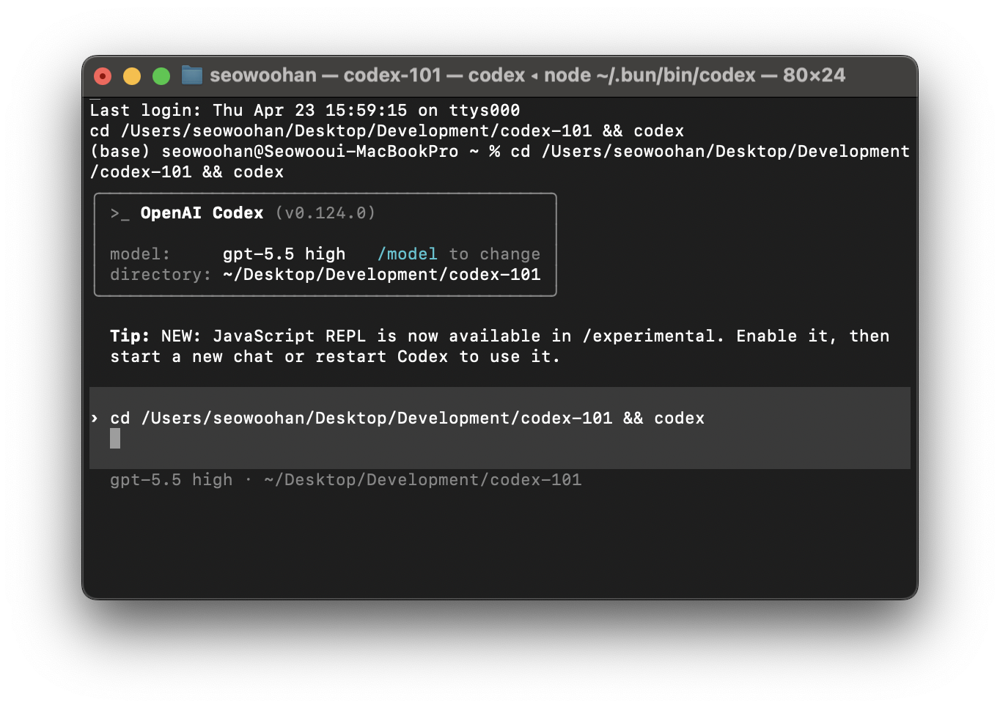
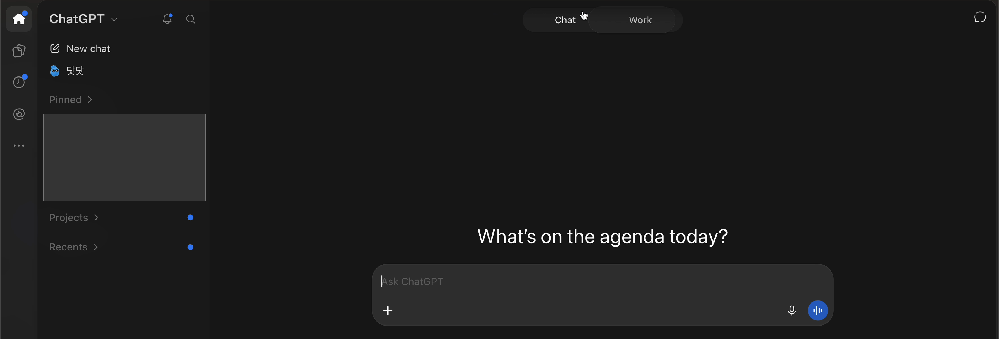
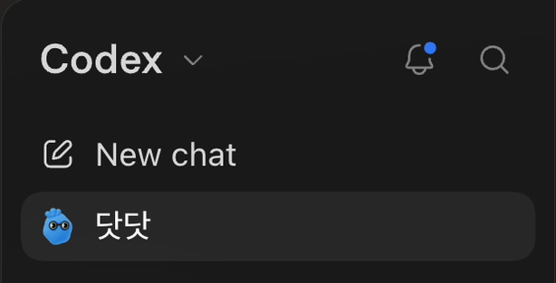
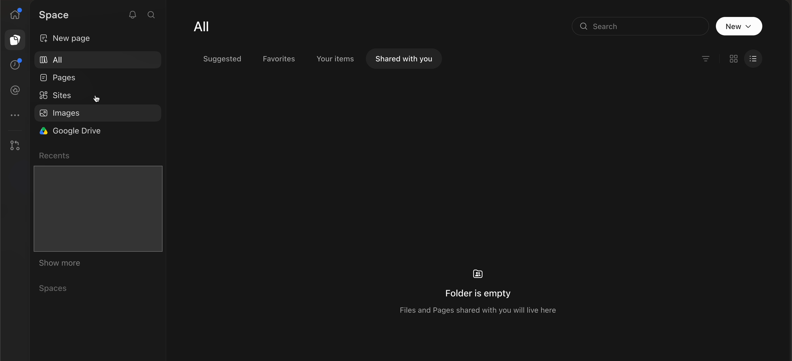
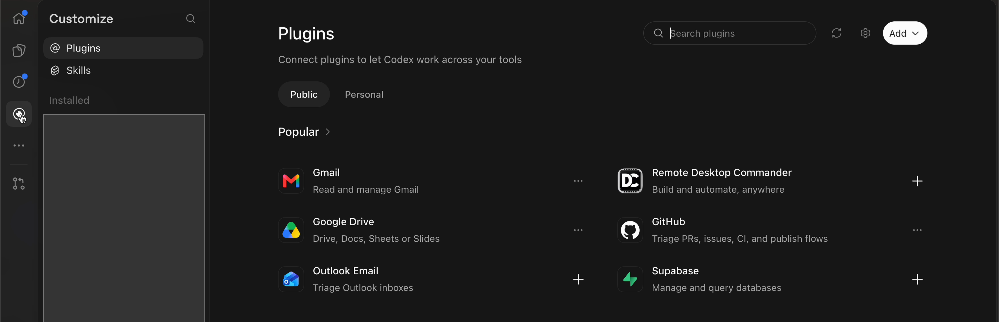
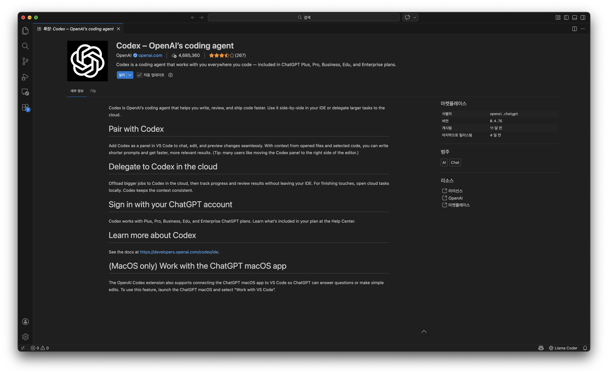
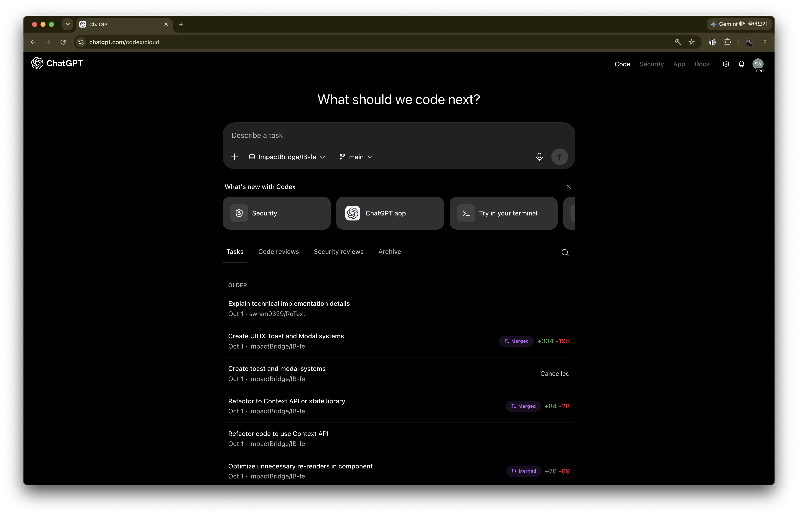
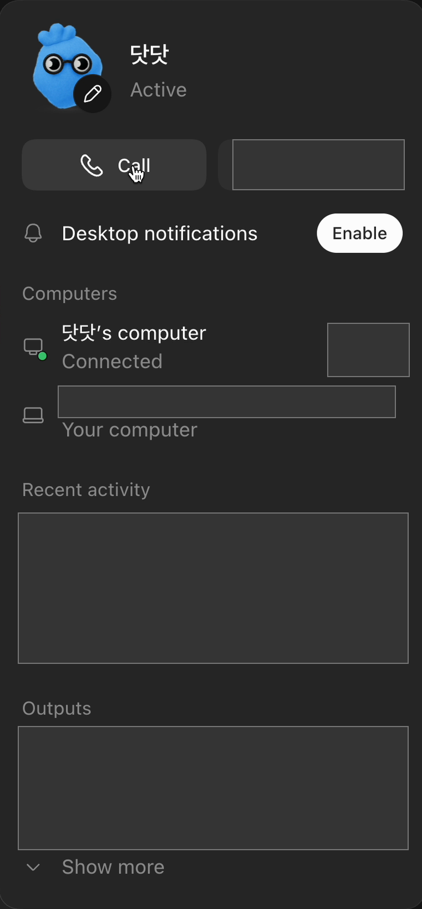
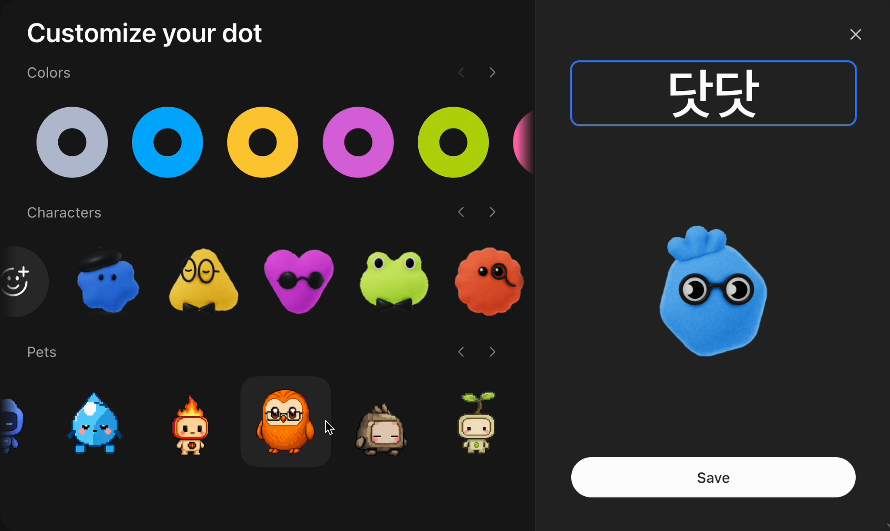
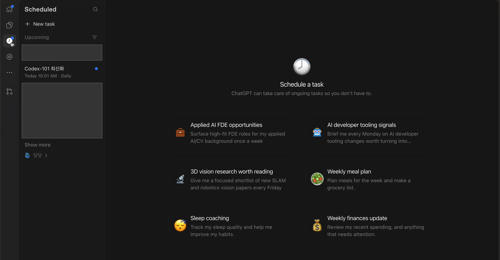

앱을 처음 쓴다면
작은 작업 하나부터 완료
앱에서 프로젝트를 열고 목표와 완료 기준을 전달합니다.
- 05에서 앱을 설치하고 로그인한 뒤 07의 실제 화면을 따라갑니다.
- 허용할 범위를 확인하고 작은 작업 하나의 결과와 변경 내용을 검토합니다.
목표: 요청부터 결과 검토까지 한 번 경험하기
앱 사용법 중심 · 공식 문서 기반 2026년 10월 10일
ChatGPT 데스크톱 앱에서 설치부터 첫 작업, 검토와 예약 실행까지.CLI·IDE·플러그인은 기본 개념과 시작점을 소개하고, 상세 명령과 개발 방법은 공식 문서로 연결합니다.
Start here
처음에는 05 설치 → 07 앱 화면 → 10 권한 → 17 요청과 검토 순서로 진행하세요. 기본 작업을 익힌 뒤 15–16에서 작업 이어가기와 예약 실행을 살펴보면 됩니다.
앱의 설치·모델 선택·프로젝트·권한·결과 검토·예약 작업이 중심입니다. CLI·IDE와 Plugins·Skills·MCP는 기본 개념과 시작점까지 소개하며, 상세 명령·연동 개발·플러그인 제작은 각 장의 공식 문서에서 확인하세요.
Built with Codex
OpenAI Developer Showcase에는 Codex로 만든 앱, 게임, 랜딩 페이지, 데이터 시각화 예제가 모여 있습니다. 어떤 결과물이 가능한지 먼저 둘러보고, 바로 실행해볼 수 있는 예시 프롬프트의 감도 함께 잡아보세요.
앱을 처음 쓴다면
앱에서 프로젝트를 열고 목표와 완료 기준을 전달합니다.
목표: 요청부터 결과 검토까지 한 번 경험하기
앱을 계속 사용한다면
잘 됐던 요청과 검토 기준을 다음 작업에도 활용합니다.
목표: 다시 실행하고 검토할 수 있는 작업 흐름
Decision first
앱의 기본 사용부터 시작하고, 터미널·에디터로 이어갈 때 추가 참고를 읽으세요.
| 상황 | 사용할 기능·환경 | 모델 기준 | 바로 읽을 곳 |
|---|---|---|---|
| 내 프로젝트에서 작은 수정 | 앱의 Local 프로젝트 | gpt-6.1-sol, 반복 작업은 gpt-6-luna | 05 설치 → 07 앱 화면 |
| 파일·웹 화면을 보며 작업 | 앱의 파일·브라우저 도구 | 계정에서 제공되는 모델·도구 확인 | 07 앱 화면과 기능 |
| 반복 작업과 프로젝트 규칙 | 앱 + AGENTS.md + Scheduled | gpt-6.1-sol / gpt-6-luna, 실제 접근 확인 | 12-16 운영 설정 |
| 터미널·에디터에서 이어서 작업 | CLI·IDE 추가 참고 | 사용할 환경의 모델 접근 확인 | 06·08 기본 사용 참고 |
Visual guide
프로젝트를 열고 목표와 자료를 전달한 뒤, 허용할 범위를 확인하고 결과를 검토합니다. 이 흐름을 익힌 다음 프로젝트 규칙과 반복 작업을 추가하세요.
Plain language
Analogy
코드를 대신 전부 알아서 만드는 마법 상자라고 보기보다, 파일을 읽고 수정하고 테스트까지 도와주는 꽤 유능한 보조 개발자라고 생각하면 이해가 쉽습니다. 그래서 처음에는 작은 일부터 맡기고, 안전 장치와 프로젝트 규칙을 같이 붙이는 흐름이 가장 자연스럽습니다.
앱 설치와 로그인, 프로젝트 선택, 첫 요청과 결과 검토를 순서대로 익힙니다.
프로젝트 규칙과 이어서 작업하기를 익힌 뒤, 검증된 반복 작업을 예약 실행으로 확장합니다.
OpenAI Codex는 코드를 읽고, 고치고, 테스트하고, 결과를 설명하는 코딩 에이전트입니다.
"코드를 쓰는 도구 → 작업을 끝내는 에이전트"
지금 사용 방식에 영향을 주는 변화 세 가지만 먼저 확인하세요. 모델·요금·설정의 자세한 설명은 각 장에서 볼 수 있습니다.
공식 문서 확인 · 2026년 10월 10일
10월 8일 · Ultrafast 제공
GPT-6.1 Sol Ultrafast가 Pro $500·적격 Enterprise·Edu에 제공됩니다. Advanced에서 실제 접근을 확인하고 처리 지역·사용량 조건을 비교하세요.
10월 14일 예정 · 모델 전환
ChatGPT·Work·Codex에서 종료 예정입니다. 저장된 모델 설정과 예약 작업을 점검하고 대체 모델로 시험하세요. OpenAI API는 계속 제공됩니다.
9월 25일 · macOS 보안
26.924.20706에 보안 취약점 수정이 포함됐습니다. 이전 빌드라면 공식 업데이트를 적용하고 설치 버전을 다시 확인하세요.
2025년 4월–2026년 8월의 주요 연혁입니다. 이후 릴리스 전체는 공식 Changelog에서 확인하세요.
| 시기 | 이벤트 |
|---|---|
| 2025.04 | Codex CLI 오픈소스 공개 |
| 2025.05 | 클라우드 샌드박스와 Codex-1 공개 |
| 2025.08.27 | IDE Extension으로 편집기 안 사용 흐름 확장 |
| 2026.02.02 | Codex macOS App 공개 |
| 2026.03.04 | Windows App으로 데스크톱 표면 확장 |
| 2026.04.23 | GPT-5.5가 Codex 추천 모델로 추가되고 Browser use·자동 승인 리뷰 공개 |
| 2026.05.14 | ChatGPT 모바일 앱의 Codex 원격 조율 preview 공개 |
| 2026.05.29 | Windows Computer Use와 Windows 원격 제어 지원 |
| 2026.06.02 | Sites 플러그인 preview로 웹사이트·앱 저장 및 배포 지원 |
| 2026.06.26 | GPT-5.6 Sol/Terra/Luna 제한 preview 공개 |
| 2026.07.09 | GPT-5.6 GA 및 Codex의 ChatGPT 데스크톱 앱 통합 |
| 2026.07.23 | ChatGPT Voice로 Codex 작업을 조율하고 Local project에 여러 폴더를 연결하는 기능 추가 |
| 2026.07.30 | 브라우저 기록·Chrome 탭 컨텍스트, 다중 저장소 리뷰, 생성 이미지 편집 흐름 추가 |
| 2026.07.31 | ChatGPT 로그인 Codex의 GPT-5.4·GPT-5.4 mini 8월 31일 은퇴 안내 |
| 2026.08.11 | Linux 데스크톱 앱 preview와 Claude Code·Cursor 설정 및 최근 작업 가져오기 지원 |
| 2026.08.13 | macOS에서 앱·웹 활동을 메모리와 타임라인으로 연결하는 Computer History 공개 |
| 2026.08.19 | Codex cloud의 GitLab issue·merge request 연동 beta 공개 |
| 2026.08.20 | Apple Messages 플러그인·로컬 thread 공유 스냅샷과 CLI 작업 대시보드 추가 |
출처: Codex changelog · Codex models · Linux app preview · GPT-5.6 preview · GPT-5.6 GA · Work with Codex from anywhere · Wasmer customer story · AI scorecard
터미널 기반(TUI) 로컬 에이전틱 코딩 및 CI/CD 자동화. Linux에서는 CLI와 desktop app preview 중 작업 방식에 맞는 경로를 고릅니다.
ChatGPT desktop app 안의 Codex 표면(macOS, Windows, Linux preview). 멀티에이전트 커맨드 센터, 내장 worktree, integrated terminal, diff review, inline editing/annotations, sidebar PR review, skills/automations 관리, personality 전환까지 한곳에서 다룹니다. Linux preview는 Ubuntu 24.04/26.04, Debian 13, Fedora 43/44, Arch Linux (최신 rolling release)의 x64/ARM64를 지원하며 Computer Use는 아직 제외됩니다.
VS Code, Cursor, Windsurf, VS Code Insiders, Xcode, JetBrains로 확장된 IDE 에이전트. 로컬 작업과 클라우드 위임을 함께 지원합니다.
새 Codex Cloud는 웹·데스크톱에서 환경을 준비·게시하고 작업을 시작하며 모바일에서도 이어갈 수 있습니다. 노트북이 꺼져도 클라우드 작업은 계속됩니다. Code Review와 GitHub·Linear 연동의 Legacy Cloud, 연결된 컴퓨터가 온라인이어야 하는 Remote 경로를 구분하세요.
출처: Quickstart · Codex app · IDE extension · Codex CLI
복잡한 코딩·에이전트 작업은 접근 가능한 GPT-6.1 Sol부터 비교하세요. 출시 배포 대상은 Plus·Pro·Business·Enterprise·Edu의 데스크톱 Codex·CLI와 웹·모바일 ChatGPT Work입니다. Enterprise·Edu는 관리자가 활성화해야 하며 Free·Go는 출시 대상이 아닙니다. Standard·Fast와 적격 플랜의 Ultrafast를 지원합니다. Work·Codex용이며 Chat 모델이 아닙니다. Free·Go의 데스크톱 Luna와 기존 GPT-6 Sol·GPT-5.6 계열의 제공 범위는 별도로 확인하세요.
선택기 또는 CLI /model에서 gpt-6.1-sol 접근을 확인하세요. 같은 입력·완료 기준으로 품질·시간·사용량을 비교한 뒤 추론 강도를 조절하세요. 반복 작업은 gpt-6-luna, 가장 어려운 종합 작업은 Astra도 비교하세요. 6.1 Sol은 클라이언트의 기본 추론 강도에서 시작하며 Light~Ultra 중 표시되는 옵션을 사용합니다. Max·Ultra는 설정에 따라 다릅니다. 설정 파일만 바꿔서는 접근 권한이 생기지 않습니다.
OpenAI는 9월 14일 GPT-5.5의 10월 14일 ChatGPT·Work·Codex 전체 플랜 종료를 공지했습니다. 현재 전환 안내는 Plus·Pro·Business·Enterprise·Edu의 GPT-6 Sol, Free·Go의 데스크톱 GPT-6 Luna입니다. 실제 접근을 확인하고 저장된 gpt-5.5 설정을 바꾸세요. OpenAI API는 대상이 아닙니다.
10월 14일 전 워크스페이스 기본값, 저장된 모델 설정, 관리 설정, custom agent, 예약 작업, 모델을 지정하는 스크립트·명령을 점검하세요. 해당 사용자와 클라이언트에서 대체 모델을 선택할 수 있는지 확인한 뒤 같은 입력과 완료 기준으로 시험하세요. 설정 변경만으로 모델 접근 권한이 생기지는 않습니다.
여러 도구를 쓰는 어려운 코딩·앱·리서치 작업용 모델입니다. 공식 추천 모델 목록에서 확인할 수 있습니다.
공식 모델 표는 데스크톱·웹 Work·CLI·IDE를 표시합니다. 실제 접근은 플랜·로그인 방식·워크스페이스·배포에 따라 확인하세요.
GPT-6.1 Sol은 코드·앱·문서를 오가는 반복적이고 긴 작업에 고려할 모델입니다. 계정과 클라이언트의 기본 추론 강도에서 시작하세요.
GPT-6 Luna는 요약·추출·분류·범위가 분명한 코딩 등 반복 작업용 모델입니다. High부터 비교하며 Max까지 지원하고 Ultra는 지원하지 않습니다.
2026년 2월 12일 공개된 텍스트 전용 research preview. 9월 14일 종료되어 현재 선택할 수 없습니다.
OpenAI 변경 기록은 GPT-5.3-Codex-Spark가 2026년 9월 14일 종료되었다고 명시합니다. ChatGPT 데스크톱 앱·Codex CLI·IDE에서 research preview를 더 이상 사용할 수 없습니다. 저장된 설정·custom agent·스크립트의 gpt-5.3-codex-spark를 현재 계정에서 사용할 수 있는 추천 모델로 바꾸세요. 빠른 응답이 필요하면 지원 모델의 Fast 설정과 크레딧을 확인하세요.
공식 Power 예시는 Luna High → GPT-6 Sol Light(예시 선택값) → GPT-6 Sol Medium → Astra Light → Astra Medium → Astra Extra High입니다. 이것이 모든 계정의 기본값이나 6.1 Sol 선택을 뜻하지는 않습니다. 계정의 기본 Power에서 시작하고 Advanced에서 실제 모델·추론·속도를 확인하세요. 6.1 Sol은 클라이언트 기본 추론, Luna는 High, Astra는 Light부터 비교합니다. 앱·웹·IDE의 Light는 CLI에서 Low입니다.
6.1 Sol
복잡하고 중요한 작업
6.1 Sol: 반복적이고 긴 코드·앱·문서 작업
Astra
가장 어려운 종합 작업
Astra: 여러 도구·자료를 오가는 작업
Luna
빠르고 반복적인 작업
속도·비용·처리량이 중요한 작업
Max
한 작업에 더 많은 추론 시간을 사용
Ultra
나눌 수 있는 큰 작업을 subagents로 처리
Luna는 Max까지 지원하고 Ultra는 지원하지 않습니다. Ultra 지원 모델의 슬라이더에서 옵션이 없으면 Settings > Configuration의 Ultra in model picker slider를 확인하세요.
현재 로컬 Codex 앱·CLI·IDE는 사용자의 직접 요청 또는 적용되는 프로젝트·스킬 지침에 따라 서브에이전트를 시작합니다. ChatGPT Work 웹의 Ultra는 지원 모델·계정에서 적합한 작업을 자율적으로 위임할 수 있고, 다른 강도에서는 직접 요청하세요. 각 에이전트의 모델·도구 작업도 토큰을 소비합니다.
앱의 모델 선택기에서 Astra를 고르거나 CLI에서 아래 명령으로 시작하세요. 기존 작업과 같은 입력·완료 기준으로 비교하세요.
Tibo는 2026년 9월 12일 조기 중단이나 이전 메시지에 답하는 문제를 일으킬 수 있던 opt-in 맥락 관리 실험을 비활성화했다고 발표했습니다. 이 가이드는 현재 활성화를 권하지 않습니다.
9월 13일 확인한 Models 문서에는 Plus/Pro 대상의 기존 활성화 안내가 남아 있습니다. 발표와 문서가 일치하지 않으므로 아래 원문에서 재개 여부를 확인하세요. 일반적인 맥락 압축이나 Memories 전체가 종료됐다는 뜻은 아닙니다.
Astra Standard는 100만 토큰당 입력 250·캐시 입력 25·출력 1,250 ChatGPT 크레딧입니다. Fast는 구독 포함 한도 2.5배·구매 크레딧 및 Enterprise 종량제 2배, Astra Ultrafast는 각각 8배·6배를 사용합니다. API는 별도 토큰 요금표를 따릅니다. 이 배율은 작업 완료 속도나 월 구독료를 뜻하지 않습니다.
ChatGPT credits · Astra API pricing
ChatGPT 로그인으로 쓰는 Codex에서는 deprecated로 표시된 이전 범용 모델입니다. API에서는 별도 제공 여부를 API models page에서 확인하세요.
GPT-5.6 Sol·Terra·Luna는 새 모델 배포 중에도 제공되는 이전 선택지입니다. GPT-5.4·mini의 ChatGPT 로그인 Codex 은퇴일은 2026년 8월 31일입니다. 현재 접근 가능한 GPT-6 Sol·Luna로 전환하세요. GPT-5.5는 10월 14일 종료 예정입니다. Plus·Pro·Business·Enterprise·Edu는 Sol, Free·Go는 데스크톱 Luna를 확인하세요. API 키 사용은 별도 제공 범위를 따릅니다. 현재 Codex는 wire_api = 'chat' 또는 Chat Completions 전용 endpoint를 지원하지 않습니다. custom provider·gateway에는 호환되는 Responses API endpoint를 사용하세요.
config.toml에서 기본 모델을 설정할 수 있습니다. 지정하지 않으면 추천 모델이 기본값입니다.
model = "gpt-6.1-sol"CLI에서 /model 명령 또는 codex -m 모델명 플래그로 임시 변경 가능.
IDE에서는 입력창 아래 모델 선택기 사용.
codex -m gpt-6.1-sol위 config.toml 예시는 로컬 클라이언트용입니다. 새 Cloud는 게시된 환경을 선택하며 실제 모델·접근은 해당 클라우드 화면에서 확인하세요. Legacy Cloud의 제한을 새 Cloud에 그대로 적용하지 마세요.
출처: Codex models · Codex pricing · OpenAI API Models · GPT-6 Astra API model guidance
10월 8일부터 GPT-6.1 Sol도 지원합니다. Pro $500·적격 Enterprise·Edu에서 제공되며 Enterprise는 워크스페이스 소유자가 활성화해야 합니다. 6.1 Sol의 추론 지역 고정은 미국·유럽(EEA·스위스), Astra는 미국만 지원합니다. 다른 개인 플랜은 크레딧을 구매해도 사용할 수 없습니다. Advanced에서 모델·속도 제공 여부를 확인하고 같은 작업의 결과·전체 시간·사용량을 비교하세요. 토큰 생성 속도는 작업 전체 완료 시간과 다릅니다.
100만 토큰당 입력 / 캐시 입력 / 출력: GPT-6.1 Sol 50 / 2.5 / 250, GPT-6 Sol 50 / 5 / 250, GPT-6 Luna 2.5 / 0.25 / 12.5 ChatGPT 크레딧입니다. 별도 캐시 쓰기 요금은 없습니다. API 달러 요금과 다르며 단가만으로 구독 포함 사용량이나 작업당 절감률을 계산하지 마세요. Work·Codex는 사용량을 공유합니다.
GPT-5.5는 2026년 10월 14일 ChatGPT·Work·Codex의 모든 플랜에서 종료 예정입니다. 유료 플랜은 GPT-6 Sol, Free·Go는 데스크톱 GPT-6 Luna의 접근을 확인해 전환하세요. OpenAI API는 대상이 아닙니다.
GPT-5.5 → Sol / Luna| OS | ChatGPT 데스크톱 앱: macOS/Windows/Linux preview · Codex CLI: macOS/Linux/Windows · Linux preview: Ubuntu 24.04/26.04, Debian 13, Fedora 43/44, Arch Linux (최신 rolling release) x64/ARM64, Computer Use 미지원 |
| Node.js | npm으로 CLI를 설치할 때만 필요 (standalone installer와 데스크톱 앱은 불필요) |
| Git | 강력히 권장 |
| 계정 | ChatGPT Free / Go / Plus / Pro / Business / Edu / Enterprise |
| 플랜 | 가격 | Codex 범위 |
|---|---|---|
| Free | $0 | 점진 배포되는 데스크톱 GPT-6 Luna · Standard |
| Go | $8/mo | 점진 배포되는 데스크톱 GPT-6 Luna · Standard |
| Plus | $20/mo | 6.1 Sol 출시 배포 포함. 모델·기능별 플랜과 선택기의 실제 접근을 확인하세요. |
| Pro | From $100/mo | Pro 100 / 200 / 500. Astra·6.1 Sol Ultrafast는 Pro 500에 포함되며 Pro 100·200의 크레딧 구매로 열리지 않습니다. 현재 Pro에는 5시간 한도가 없지만 다른 사용량 한도는 대시보드에서 확인하세요. |
| Business | Pay as you go | 표준 Business seat 또는 Codex-only pay-as-you-go seat + 더 큰 VM + credits + SAML SSO/MFA |
| Enterprise & Edu | 맞춤 / credits | Business 포함 + Codex-only pay-as-you-go 가능 + 우선 처리 + RBAC/감사/거버넌스 |
| API Key | 토큰 사용량 기반 | CLI/IDE/SDK 전용, 클라우드 기능 없음. API-key 사용 시 실제 모델 선택기와 표준 API 가격표를 함께 확인 |
7월 9일 발표 기준, 업데이트된 Mac/Windows desktop app의 Chat·Work·Codex가 Free를 포함한 모든 플랜에 전 세계 제공됩니다.
Worldwide
일반 좌석과 함께 Codex-only pay-as-you-go seat 경로를 확인하세요.
서로 다른 범위이므로 한 숫자로 섞지 말고 함께 대조하세요.
OpenAI 변경 기록은 GPT-5.3-Codex-Spark가 2026년 9월 14일 종료되었다고 명시합니다. ChatGPT 데스크톱 앱·Codex CLI·IDE에서 research preview를 더 이상 사용할 수 없습니다. 저장된 설정·custom agent·스크립트의 gpt-5.3-codex-spark를 현재 계정에서 사용할 수 있는 추천 모델로 바꾸세요. 빠른 응답이 필요하면 지원 모델의 Fast 설정과 크레딧을 확인하세요.
Pro 200 신규 가입이 재개됐으며 이전 사용량 유지 대상이 아닌 신규 구독에는 낮아진 포함 사용량이 적용됩니다. 공식 도움말의 기준 시점 또는 그 전 7일 동안 활성 상태였던 적격 Pro 200 구독은 활성 구독을 유지하면 10월 29일까지 이전 사용량을 유지하고 이후 새 한도로 전환됩니다. 가격은 월 $200이며 Pro 500이나 Ultrafast로 자동 변경되지 않습니다. 계정 안내 메일과 결제 화면의 적용 조건을 확인하세요.
출처: Quickstart · Codex pricing · Codex rate card · Speed · Pay-as-you-go pricing for teams
운영체제에 맞는 설치 경로 하나를 선택하세요.
공식 Quickstart의 Download ChatGPT 버튼에서 macOS 앱을 받습니다.
Download ChatGPT공식 다운로드 또는 Microsoft Store를 사용합니다.
winget install Codex -s msstore
배포판·CPU에 맞는 .deb, .rpm 또는 Arch 설치 스크립트를 공식 문서에서 선택합니다.
Linux 앱 공식 문서지원: Ubuntu 24.04/26.04, Debian 13, Fedora 43/44, 최신 Arch Linux · x64/ARM64. uname -m으로 CPU를 확인하세요.
다운로드한 패키지가 있는 폴더에서 실행하는 x64 예시입니다.
sudo apt install ./chatgpt_amd64.debsudo dnf install ./chatgpt.x86_64.rpmARM64 파일명: chatgpt_arm64.deb 또는 chatgpt.aarch64.rpm.
Arch는 공식 install-arch.sh를 사용합니다. 설치 시 전체 시스템 업그레이드 확인이 포함됩니다.
앱 업데이트는 배포판의 패키지 관리자를 사용합니다. Linux preview는 Computer Use를 아직 지원하지 않습니다.
설치한 앱을 실행해 ChatGPT 계정으로 로그인한 뒤 Codex에서 프로젝트를 만들거나 폴더를 엽니다.
API 키 로그인은 일부 workspace·cloud 기능이 제한될 수 있습니다.
PowerShell
기본
호환 Windows 11에서는 MXC sandbox를 우선 사용합니다. 소비자용 앱은 자동 선택하며 CLI·기업 환경은 공식 문서의 features.prefer_mxc 설정과 기기·조직 정책을 확인하세요. 사용할 수 없으면 허용된 elevated fallback을 우선합니다. 승인 정책은 sandbox와 별도로 설정합니다.
WSL
선택
Settings에서 agent를 WSL로 바꾼 뒤 앱을 재시작하세요.
# Standalone installer (macOS/Linux)
curl -fsSL https://chatgpt.com/codex/install.sh | sh
# Standalone installer (Windows PowerShell)
powershell -ExecutionPolicy ByPass -c "irm https://chatgpt.com/codex/install.ps1 | iex"
# npm
npm install -g @openai/codex
npm update -g @openai/codex
# Homebrew (macOS)
brew install codex
brew upgrade codex
# 설치 확인
codex --version# ChatGPT 계정 로그인 (권장)
codex login
# 또는 API 키 사용
export OPENAI_API_KEY="your-api-key-here"출처: Quickstart · Codex CLI · Windows app · Windows sandbox · Linux app preview · IDE integrations · Authentication
터미널에서 Codex를 쓰려는 사용자를 위한 기본 명령과 앱과의 차이입니다. 상세 옵션과 운영 방법은 공식 CLI 문서에서 확인하세요.

# 인터랙티브 모드
codex
# 프롬프트와 함께
codex "explain this codebase"
# 특정 디렉토리
codex --cd /path/to/project
# 파일 참조
@src/components/Button.tsx 리팩토링해줘
# 쉘 명령어 실행
!npm test출처: Quickstart · Codex CLI · CLI slash commands
CLI는 codex --version으로 확인하고 npm install -g @openai/codex@0.161.0로 업데이트하세요. 10월 7일 버전은 기본·Amazon Bedrock 카탈로그에서 GPT-6.1 Sol을 기본값으로 사용합니다. /model에서 실제 선택과 접근 가능 여부를 확인하고, 활성 세션에서 /mcp login <name>으로 MCP 서버에 로그인할 수 있습니다. 카탈로그 기본값은 계정·조직 접근 권한을 부여하지 않습니다.
CLI 0.161.0의 Daybreak는 별도 opt-in입니다. 승인된 작업에서 codex --enable cli_daybreak 또는 features.cli_daybreak=true를 사용해야 하며 daybreak=true만으로는 켜지지 않습니다. 기본 상태에서는 /daybreak와 자동 Cyber 라우팅이 숨겨집니다. 활성화해도 적격 ChatGPT 로그인·OpenAI provider·모델/프로그램 지원이 필요합니다. codex exec --cyber-access-program의 명시적 실행별 선택은 이 기능이 꺼져 있어도 별도로 가능하며 저장된 선택은 바꾸지 않습니다.
2026년 10월 1일 사용자 녹화에서 확인한 실제 화면입니다. 한국어 대화·닷 이름과 화면에 표시된 영어 UI 라벨을 그대로 보존했습니다. 개인 정보는 잘라내거나 불투명하게 가렸으며, 이미지를 누르면 크게 볼 수 있습니다. 계정·버전에 따라 메뉴와 제공 범위가 다를 수 있습니다.


좌상단 ChatGPT·Codex 메뉴로 작업 공간을 확인하고, ChatGPT 홈의 상단 Chat·Work 전환으로 대화와 작업 모드를 선택합니다.
New chat
녹화의 Codex 사이드바에는 New chat이 표시됩니다. 새 대화를 시작할 때 사용할 프로젝트·실행 위치·모델을 확인하세요.
여러 폴더를 추가하고 primary folder를 작업 기준으로 사용합니다.
Git
new chat
AGENTS.md
skills
config.toml
| 권한 profile | 실행 위치 | 설명 |
|---|---|---|
| Local | 내 맥 | 현재 프로젝트 디렉토리에서 직접 작업 |
| Worktree | 내 맥 | Git Worktree로 변경사항 격리. 병렬 작업에 적합 |
| Cloud | 클라우드 | 원격 클라우드 환경에서 실행 |
OpenAI의 9월 25일 공지는 macOS 앱 26.924.20706에서 CVE-2026-100754를 수정했다고 명시합니다. 앱의 버전 정보와 업데이트 제공 여부를 확인하고, 이전 빌드라면 공식 업데이트를 적용한 뒤 다시 버전을 확인하세요. 조직에서 업데이트를 관리한다면 관리자 배포 정책을 따르세요.
Settings > Pets에서 펫 또는 Mini를 선택하세요. macOS는 Option+Space, Windows는 Windows+Alt+P로 Quick Chat을 열고 입력 후 Enter로 보냅니다. @로 맥락, $로 스킬을 추가하고 벨 아이콘에서 진행 상황을 확인하세요. 여기서 시작한 대화는 프로젝트 밖에 있으므로 프로젝트 자료가 필요하면 메인 앱의 해당 프로젝트에서 시작하세요.
공유할 창을 맨 앞으로 가져온 뒤 Windows는 양쪽 Alt, macOS는 양쪽 Command를 누르세요. Appshot에는 창 이미지와 앱이 제공하는 텍스트가 포함됩니다. 설정에서 단축키와 Appshot destination을 확인하고 첨부 내용에 필요한 작업을 함께 적으세요. Google Docs·Gmail 등은 화면 이미지만 전달될 수 있습니다.
Windows Appshot은 메인 앱에서 열립니다. macOS는 플로팅 컨트롤이 열려 있고 메인 창이 뒤에 있을 때 destination이 Automatic이면 그 컨트롤에서 새 대화를 시작합니다. 권한 설정은 메인 앱에서 먼저 완료하세요.
데스크톱 앱에서 생성된 이미지를 열고 Canvas view → Comment로 수정할 부분에 의견을 남기세요. 여러 이미지는 Multi-select로 선택한 뒤 수정 지시를 함께 보내세요. 결과에서 글자·구도·유지할 요소를 원본과 비교하세요.
API에는 gpt-image-2.5-flare(빠른 일상 이미지 작업)와 gpt-image-2.5-sunburst(정밀한 편집)가 추가됐습니다. Image API에서는 model로, Responses API에서는 image_generation 도구의 model로 지정합니다. API 요금은 Codex 포함 사용량과 별도이며, 조직 인증이 필요할 수 있습니다.
2026년 9월 9일 KST, VB는 ChatGPT Images 2.5의 ChatGPT·Work·Codex 배포 시작을 소개했습니다. 내 계정의 제공 여부를 확인하세요. API 모델 ID가 앱 Power 선택기에서 같은 이름으로 보인다는 뜻은 아닙니다.
이미지 편집 공식 문서 · API 모델 · 배포 소개: Image generation · GPT Image 2.5 · VB · 2026-09-09 KST
먼저 하려는 일에 맞는 기능 하나를 선택하세요. 각 항목에서 쓰임새·시작점·확인할 권한을 짚고, 자세한 설정은 공식 문서로 연결합니다.
Browser use
Browser use는 In-app browser 위에서 Codex가 직접 클릭, 입력, 렌더 상태 검사, 스크린샷, 수정 검증까지 수행하게 하는 기능입니다. 로컬 개발 서버나 파일 기반 프리뷰처럼 로그인 없이 열 수 있는 페이지에서 프론트엔드 버그를 재현하고 고칠 때 가장 실전적입니다.
Example prompt
Use @Browser to open http://localhost:3000/settings.
Reproduce the mobile overflow bug at 390px width, fix only the overflowing controls,
then verify the page again and attach the screenshot result.Computer use
Astra는 브라우저와 전문 앱을 오가며 작업하고 결과를 확인하도록 설계됐습니다. 사용할 앱·파일·참고자료를 연결하고, 결과를 실제 화면에서 검증하도록 요청하세요.
로컬 개발 서버나 공개 페이지를 렌더 상태 그대로 검토할 때 씁니다. 로그인 없는 URL만 열고, 브라우저 코멘트로 특정 요소를 찍은 뒤 “이 코멘트만 반영해 달라”고 좁게 요청하는 흐름이 가장 안정적입니다.
Codex가 직접 브라우저를 열고 클릭·입력·검증해야 할 때 씁니다. Browser 플러그인과 사이트 허용 설정이 필요하고, 작업은 한 URL·한 상태·한 버그처럼 작게 잘라야 결과를 검토하기 쉽습니다.
배너, 배경, UI 목업 자산, 일러스트를 코드 작업과 같은 thread에서 바로 만들거나 수정할 때 적합합니다. 작은 단위 자산은 내장 기능으로, 대량 생성이나 비용 분리는 API 키 경로로 넘기는 식으로 구분하면 좋습니다.
반복해서 설명하는 선호, 스택, 프로젝트 관례를 Codex가 다시 기억하게 할 때 유용합니다. 다만 팀의 필수 규칙은 여전히 `AGENTS.md`에 두고, memory는 개인 리콜 레이어로 쓰는 것이 공식 권장 흐름입니다.
같은 대화 문맥을 유지한 채 주기적으로 다시 깨워야 하는 작업에 씁니다. 긴 실행 상태 확인, PR 댓글 재점검, Slack/GitHub 폴링처럼 “이전 대화의 맥락”이 중요한 경우에 project automation보다 thread automation이 맞습니다. 현재 문서 기준으로 thread automation은 분 단위 간격이나 일/주간 스케줄에 잘 맞습니다.
skills, app integrations, MCP server를 묶어 배포하는 단위입니다. 반복 프롬프트가 안정화된 뒤 팀에 공유할 때 plugin으로 올리고, 설치 후에는 작업 설명만 하거나 `@plugin`으로 특정 workflow를 직접 호출하는 방식이 좋습니다. Apple Messages는 이번 릴리스의 Apple Silicon(arm64)용 macOS ChatGPT desktop app에서 Codex 또는 ChatGPT Work로 쓸 수 있으므로, 필요한 macOS 권한을 준 뒤 메시지와 수신자를 검토하고 전송을 승인하세요. Full access에서는 전송 확인이 막힐 수 있어 Ask for approval 또는 Approve for me가 필요합니다.
왼쪽 세로 탐색 막대의 문서 모양 아이콘 → Space. New page로 새 페이지를 시작하거나 All·Pages·Sites·Images·Google Drive를 선택합니다. 이 화면의 All → Shared with you는 빈 목록이므로, 공유 자료가 있다고 가정하지 마세요.

왼쪽 세로 탐색 막대의 원형 아이콘 → Customize → Plugins. Search plugins로 검색하고 Public·Personal 탭과 Add 메뉴를 확인하세요. 설치된 항목은 왼쪽 Installed에 나타나며 Skills는 별도 탭입니다. 목록에 보이는 것과 계정 연결·실제 접근 허용은 별개입니다.

출처: Codex app · App features · In-app browser · Browser extension · Site tools (WebMCP) · App automations · Apple Messages plugin · 읽기 전용 thread snapshot · Codex for (almost) everything
에디터에서 이어서 작업할 때 참고하는 개요입니다. 확장 설치·설정의 상세 절차는 공식 IDE 문서에서 확인하세요.

VS Code, Cursor, Windsurf, VS Code Insiders에는 Codex 확장을 설치하고, Xcode와 JetBrains IDE에서는 각 IDE의 자체 통합을 사용합니다. ChatGPT 계정 또는 API 키로 로그인할 수 있고 JetBrains는 JetBrains AI 구독도 지원합니다. Windows에서는 네이티브 sandbox를 기본 경로로 두고, Linux-native 도구나 이미 WSL2에 있는 저장소가 중요할 때 WSL2 워크스페이스를 선택하세요.
| 모드 | 파일 접근 | 코드 수정 | 명령 실행 |
|---|---|---|---|
| Chat | △ 수동 컨텍스트만 (@file/열린 파일/선택 영역) | ❌ | ❌ |
| Agent | ✅ | ✅ (승인 필요) | ✅ (승인 필요) |
| Agent (Full Access) | ✅ | ✅ | ✅ |
Chat 모드는 자동으로 파일을 탐색/수정하지 않지만, @file·열린 파일·선택 영역을 컨텍스트로 포함해 질문할 수 있습니다.
출처: IDE extension · IDE features · IDE slash commands · Windows app
웹·데스크톱의 새 작업에서 Work in → Cloud → Select environment → Create environment를 선택하고 GitHub 저장소를 연결하세요. Codex가 의존성과 도구를 설치·시험하면 결과와 접근 설정을 검토하고 Save → Publish를 선택합니다. Environment published 확인 후 Start a new task로 시작하세요. 기존 작업은 자기 상태를 유지하며 변경한 공통 환경은 Republish 후 새 작업에 적용됩니다.
저장은 설정, 게시는 준비된 파일 시스템, 공유는 환경 이용 권한을 다룹니다. Code Review·GitHub·Linear 연동은 Legacy Cloud 문서를 확인하세요. 로컬 컴퓨터의 파일·앱을 쓰는 Work Cloud는 별도 연결과 온라인 상태가 필요합니다.

Cloud
Work in → Cloud에서 게시된 환경을 선택하세요. 각 작업은 별도 작업 공간을 사용하며 컴퓨터가 꺼져도 진행할 수 있습니다.
Environment를 만든 뒤 issue·merge request의 @codex와 일회성·자동 review를 사용합니다.
Remote
iOS·Android 또는 지원되는 Mac·Windows 앱에서 awake/online Codex App host를 제어합니다. iOS 1.2026.237에서는 Windows·Linux를 포함한 연결 host 간 첨부를 이어 받고, Priority에서 실행 중·읽지 않은·응답 대기 task를 먼저 확인합니다.
SSH
SSH config의 구체 host alias로 프로젝트를 열어 원격 환경에서 실행합니다.
~/.ssh/config
같은 account/workspace와 SSO·MFA·passkey가 필요할 수 있으며, Business/Enterprise는 admin 또는 RBAC 허용이 필요할 수 있습니다.
Codex Web에서 GitHub 연결 후 리뷰 대상 저장소를 선택하고 "Automatic reviews"를 활성화하면 새 PR마다 자동 리뷰됩니다. AGENTS.md 규칙 기반 커스터마이징 가능.
10월 7일 업데이트는 Codex 작업 링크 직접 열기와 응답 안의 Page 미리보기를 지원합니다. 작업 링크를 연 뒤 대상 컴퓨터와 checkout을 확인하세요. 새 작업은 컴퓨터가 오프라인이거나 재연결 중이어도 선택을 유지하며, worktree 파일·변경 표시가 데스크톱 checkout과 더 잘 맞도록 개선됐습니다. 입력창 + 메뉴의 Plugins에서 플러그인을 찾고, 새 승인 선택기에서 권한을 확인하세요. 저장소와 실행은 연결된 컴퓨터에 남습니다.
iOS 1.2026.244에서는 @로 다른 task를 참고하고, 작업 중 질문에 답하며, 새 worktree의 기준 브랜치나 현재 로컬 변경 포함 여부를 선택할 수 있습니다. iOS 26은 백그라운드 설정 진행을 Live Activity로 표시합니다. 저장소와 실행은 연결된 컴퓨터에 남습니다.
출처: Quickstart · Codex cloud · Remote connections · GitHub integration
| 권한 범위 | 파일 읽기 | 파일 수정 | 명령 실행 | 네트워크 |
|---|---|---|---|---|
| 읽기 전용 | ✅ | ❌ | △ 읽기 명령만 | ❌ |
| 작업공간 권장 시작점 | ✅ | ✅ | ✅ 작업공간 안 | ❌ |
| 사용자 정의 | 설정값 | 설정값 | 설정값 | 명시한 도메인 |
| 전체 접근 | ✅ | ✅ | ✅ | ✅ |
# 현재 권한 선택기
/permissions
# 새 permission profile 방식
default_permissions = ":workspace"
approval_policy = "on-request"
# 예전 sandbox 설정을 쓴다면 위 profile과 섞지 않습니다
codex --sandbox workspace-write --ask-for-approval on-request권한 범위는 로컬 명령이 읽고 쓸 경로와 접속할 네트워크를 묶습니다. 작업공간 범위는 활성 workspace와 임시 폴더 쓰기를 허용하지만 네트워크는 기본적으로 열지 않는 낮은 마찰의 시작점입니다. App의 Ask for approval·Approve for me는 경계를 넘는 요청을 누가 검토할지 정하는 방식이며, sandbox 경계 자체를 없애지 않습니다. 새 permission profile 방식과 예전 `sandbox_mode` 설정은 같은 구성에서 섞지 마세요.
앱 입력창 아래 권한 메뉴에서 Approve for me를 선택하세요. 보이지 않으면 Settings > General > Permissions에서 Auto-review를 켠 뒤 해당 채팅에서 선택하세요. 설정에서 켜기만 하면 기존 채팅은 바뀌지 않습니다. sandbox 안의 일반 작업은 그대로 실행되고, 승인이 필요한 경계 밖 요청을 별도 에이전트가 검토합니다. 조직 정책과 Computer Use 앱 승인 조건은 유지됩니다. 거부되면 사유를 확인하고 더 안전한 대안이나 필요한 사용자 판단으로 이어가세요. 보안 보장은 아닙니다.
출처: Permission modes · Permission profiles · Sandbox · Config reference
아래 목록은 CLI / IDE / App 공식 문서를 교차 확인해 분리한 명령어입니다. 서로 이름이 비슷해도 동작이 다를 수 있습니다.
/model |
활성 모델 변경 (가능한 경우 reasoning effort 포함) |
/permissions |
승인/권한 정책 변경 |
/agent |
활성 에이전트 스레드 전환 |
/plan |
플랜 모드 전환 (선택적으로 인라인 프롬프트 포함) |
/compact |
대화 요약으로 컨텍스트 토큰 절약 |
/status |
세션 설정/토큰 사용량 확인 |
/review |
워크트리 코드 리뷰 실행 |
/feedback |
진단 로그와 피드백 전송 |
CLI에는 이외에도 /personality, /experimental, /init, /mention, /mcp, /diff, /fork, /resume, /new, /quit 등이 있습니다. /approvals는 별칭으로 동작하지만 팝업 목록에는 표시되지 않습니다.
/auto-context |
자동 컨텍스트 포함 토글 |
/cloud |
클라우드 모드로 전환 |
/cloud-environment |
클라우드 환경 선택 (cloud 모드에서만) |
/local |
로컬 모드로 전환 |
/review |
변경사항 리뷰 모드 시작 |
/status |
스레드 ID/컨텍스트/레이트리밋 확인 |
/feedback |
피드백 다이얼로그 열기 |
/plan-mode |
멀티스텝 계획용 plan mode 토글 |
/mcp |
연결된 MCP 서버 상태 열기 |
/review |
변경사항 리뷰 모드 시작 |
/status |
스레드 ID/컨텍스트/레이트리밋 확인 |
/feedback |
피드백 다이얼로그 열기 |
App 문서 기준으로 명령은 환경/권한에 따라 달라질 수 있으며, 활성화된 skill은 슬래시 목록에 추가될 수 있습니다.
아래 단축키는 CLI(TUI) 기준입니다. App은 OS별 단축키(macOS Cmd, Windows Ctrl)를, IDE는 각 IDE 키맵을 사용합니다.
| Esc ×2 | 입력창이 비었을 때 이전 사용자 메시지 편집 |
| Ctrl+C | 세션 종료 (/exit) |
| Ctrl+G | 프롬프트 에디터 열기 (VISUAL/EDITOR) |
공식 문서: CLI slash commands · IDE slash commands · App commands
Codex에게 프로젝트 맥락과 규칙을 알려주는 핵심 파일. CLI, App, IDE, Web 모두에서 참조합니다.
# AGENTS.md 위치 및 우선순위
AGENTS.override.md → 최우선
./AGENTS.md → 가장 가까운 파일
../AGENTS.md → 상위 디렉토리
~/.codex/AGENTS.md → 전역 개인 설정repo layout, 실행 방법, build/test/lint 명령, 엔지니어링 규칙, 금지사항, 완료 기준과 검증 방법을 적어두면 반복 설명이 크게 줄어듭니다.
개인 기본값은 전역 파일에, 팀 표준은 저장소 루트에, 하위 디렉토리의 로컬 규칙은 더 가까운 AGENTS.md에 두는 구조가 가장 관리하기 쉽습니다.
모호한 규칙을 길게 적기보다 실제로 반복되는 실수만 추가하세요. 문서가 커지면 계획, 리뷰, 아키텍처 규칙은 별도 markdown으로 분리하는 편이 낫습니다.
Codex가 같은 실수를 두 번 반복하면 retrospective를 시키고 AGENTS.md를 업데이트하세요. 일회성 프롬프트보다 지속적인 품질 개선 효과가 큽니다.
# 자동 생성
/init#:schema https://developers.openai.com/codex/config-schema.json
# ~/.codex/config.toml — permission profile 방식
model = "gpt-6.1-sol"
review_model = "gpt-5.6-terra"
approval_policy = "on-request"
approvals_reviewer = "user"
default_permissions = "project_safe"
web_search = "cached"
# sandbox_mode / sandbox_workspace_write와 함께 쓰지 않습니다
[permissions.project_safe]
description = "현재 프로젝트 안에서만 읽고 쓰는 기본 profile"
extends = ":workspace"
[permissions.project_safe.network]
enabled = false
[features]
fast_mode = true
[tools]
web_search = { context_size = "medium", allowed_domains = ["learn.chatgpt.com", "developers.openai.com", "openai.com"] }
view_image = true
# OpenAI Docs MCP
[mcp_servers.openaiDeveloperDocs]
url = "https://developers.openai.com/mcp"
required = truecodex --profile fast
codex --profile deep개인 기본값은 ~/.codex/config.toml, 저장소별 동작은 .codex/config.toml, 일회성 실험은 CLI override로 분리하는 패턴이 가장 안정적입니다.
model은 기본 두뇌, review_model은 리뷰 전용 두뇌, default_permissions는 파일·네트워크 경계, approval_policy는 언제 멈춰서 묻는지, web_search는 웹 최신성 모드, service_tier는 속도 우선 경로, model_instructions_file은 항상 따라야 할 개인 기본 지침입니다. 예전 sandbox_mode를 쓰는 구성에서는 permission profile과 섞지 않습니다.
모델, review_model, reasoning effort, permission profile, approval policy, web_search, MCP 서버처럼 세션마다 흔들리면 결과 차이가 큰 항목부터 기본값으로 고정하세요.
처음에는 `:workspace` 또는 그보다 좁은 profile로 시작하고, 검증된 workflow에 필요한 경로와 네트워크만 명시적으로 여세요.
품질 문제가 보이면 프롬프트보다 먼저 작업 디렉토리, 쓰기 권한, 기본 모델, 필요한 도구 연결이 맞는지 확인하세요. 많은 실패는 setup mismatch에서 나옵니다.
Business/Enterprise 운영자는 admin-enforced requirements로 approval, sandbox, web_search, MCP allowlist, Browser Use, Computer Use, in-app browser 같은 기능을 사용자 설정보다 우선 적용할 수 있습니다.
출처: Best practices · Config reference · Permissions · Sandbox
MCP는 Codex가 외부 도구와 문서를 읽고, 브라우저를 제어하고, 원격 시스템과 연결할 수 있게 해주는 표준 프로토콜입니다.
Codex는 MCP 없이도 사용할 수 있습니다. 하지만 처음 시작하는 사람이라면 OpenAI Docs MCP 하나만 연결해도 설치, 모델, 명령어, API 문서를 훨씬 정확하게 찾게 됩니다.
# 1) 초보자 추천: OpenAI Docs MCP
codex mcp add openaiDeveloperDocs --url https://developers.openai.com/mcp
# 2) 연결 확인
codex mcp list
codex mcp get openaiDeveloperDocs
# 3) UI 작업이 많다면 Playwright도 추가
codex mcp add playwright -- npx --yes @playwright/mcp@latest이 문장이 없으면 Codex에게 매번 문서 MCP를 명시적으로 사용하라고 요청해야 할 수 있습니다.
Always use the OpenAI developer documentation MCP server for OpenAI API, ChatGPT Apps SDK, Codex, and related product questions unless I explicitly say otherwise.MCP가 실제로 동작하는지 확인하려면, 최신 OpenAI 문서에서 특정 항목을 찾아 요약하게 해보는 것이 가장 빠릅니다.
# 연결 후 테스트 프롬프트
OpenAI Responses API의 tools 요청 스키마를
OpenAI developer docs에서 찾아서
필수 필드만 bullet 5개로 요약해줘.CLI와 IDE Extension은 MCP 설정을 공유합니다. 전역은 ~/.codex/config.toml, 프로젝트별로만 쓰고 싶다면 ./.codex/config.toml을 사용할 수 있습니다. 더 엄격하게 관리하려면 enabled, required, enabled_tools, disabled_tools 같은 옵션도 설정할 수 있습니다.
# 전역 설정: CLI와 IDE Extension이 공유
~/.codex/config.toml
[mcp_servers.openaiDeveloperDocs]
url = "https://developers.openai.com/mcp"
# 프로젝트에만 적용하고 싶다면
./.codex/config.toml필요한 맥락이 저장소 밖에 있거나, 데이터가 자주 바뀌거나, 붙여넣기 대신 도구 호출로 재현 가능한 흐름을 만들고 싶을 때 MCP가 가장 효과적입니다.
Codex는 STDIO 서버와 OAuth를 포함한 Streamable HTTP 서버를 지원합니다. 먼저 설치가 쉬운 서버부터 연결해 반복 루프를 줄이세요.
처음부터 모든 툴을 연결하지 말고, 지금 수동으로 자주 반복하는 작업 하나나 둘만 줄여주는 도구부터 붙이세요. 신뢰가 생긴 뒤 확장하는 편이 낫습니다.
| 서버 | 용도 | 추천 순서 |
|---|---|---|
| OpenAI Docs | OpenAI 공식 개발자 문서를 검색하고 읽기 | 가장 먼저 |
| Playwright | 브라우저 열기, 클릭, UI 상태 확인 | UI 테스트가 필요할 때 |
| GitHub | 원격 PR, 이슈, 저장소 메타데이터 다루기 | Git만으로 부족할 때 |
| Figma | 디자인 파일과 컴포넌트 스펙 확인 | 디자인 협업이 많을 때 |
출처: OpenAI Docs MCP · Best practices · Codex MCP
codex resume --last # 마지막 세션
codex resume # 목록에서 선택
codex resume <ID> # 특정 세션
# 세션 내 명령
/permissions /mcp /status /review /feedback /compact복잡하거나 모호한 작업은 바로 코딩하지 말고 먼저 계획을 세우게 하세요. Plan mode, 인터뷰식 요구사항 정리, 실행 계획 템플릿은 긴 작업의 실패율을 줄여줍니다.
프로젝트 전체를 하나의 스레드로 몰지 말고, 하나의 문제를 푸는 동안만 같은 스레드를 유지하세요. 일이 실제로 갈라질 때만 fork하는 편이 문맥 품질이 좋습니다.
resume으로 이어가고, compact는 milestone 이후에만 쓰세요. 너무 이른 요약은 추론 흔적과 결정 근거를 지워 품질을 떨어뜨릴 수 있습니다.
메인 스레드는 요구사항과 최종 결정을 맡기고, 독립적으로 진행할 수 있는 탐색·테스트·트리아지부터 병렬 작업을 검토하세요. 각 서브에이전트도 토큰을 소비하므로 단일 실행과 품질·총사용량·시간을 비교하세요. 같은 파일을 동시에 편집할 때는 충돌과 조율 비용을 확인하세요.
출처: Best practices · CLI commands · Subagents · Long-running work
Dots는 Astra 기반의 상시 클라우드 에이전트로 점진 배포 중입니다. Pro 100·200·500은 18세 초과이며 EEA·영국·스위스 밖인 사용자, Business Premium·Enterprise는 전 세계 배포 대상입니다. Enterprise는 관리자 활성화가 필요합니다. 최신 모바일 앱·데스크톱 앱·데스크톱 브라우저에서 생성하고 이어가세요. 모바일 웹은 지원하지 않습니다.
맡길 책임·자료·자율 실행 범위·알림 조건을 정하고 첫 결과를 검토하세요. 편집 예시: “이 프로젝트의 변경과 미결정을 추적하고, 결정이 필요할 때 알려주세요. 답장은 초안으로 준비해 주세요.” dot 대화와 위임한 Work·Codex 작업의 사용량은 구분됩니다. 로컬 도구를 쓰려면 연결한 컴퓨터와 앱이 켜져 있어야 합니다.
사이드바의 닷 이름 → 닷 프로필. Call, Desktop notifications, Computers, Recent activity, Outputs가 보입니다. 캐릭터 옆 연필 → Customize your dot에서 Colors·Characters·Pets와 이름을 고르고 Save를 누릅니다. 닷 꾸미기와 Settings → Pets의 Quick Chat 설정은 서로 다른 화면입니다.
Computers의 닷 클라우드 컴퓨터와 Your computer를 구분하세요. 로컬 컴퓨터 연결은 별도 권한이며, 다른 앱이나 모든 대화에 대한 접근을 뜻하지 않습니다.


Team Tasks는 팀 서비스 계정과 승인된 앱 연결로 클라우드에서 실행됩니다. 개인 로컬 예약 작업과 분리하고 관리자 설정부터 확인하세요. Plugin Extensions는 사이드바 앱·대화 패널·파일 뷰어·폼을 추가합니다. composer mention은 데스크톱 전용이며 Free·Go 웹 확장은 추후 예정입니다. MCP Events는 MCP 2.0의 webhook 방식을 사용하고 polling·streaming은 지원하지 않습니다.
반복 작업은 GitHub 연동이 없어도 실행할 수 있습니다. ChatGPT 데스크톱 앱의 Scheduled에서 로컬 프로젝트와 실행 환경을 고르면, 앱이 켜져 있고 프로젝트가 디스크에 있는 동안 현재 체크아웃 또는 격리된 worktree에서 작업합니다.
왼쪽 세로 탐색 막대의 시계 아이콘 → Scheduled → New task. Upcoming에서 기존 작업과 다음 실행 시각을 확인합니다. 녹화에는 “Codex-101 최신화”가 보이지만 설정 창·실행 환경은 열리지 않았으므로, 이 목록만으로 Local 또는 Worktree 실행을 판단할 수 없습니다.

| 경로 | 실행 위치 | 잘 맞는 일 | 주의점 |
|---|---|---|---|
| Local scheduled task | 내 로컬 체크아웃 | 문서 갱신 후 바로 commit/push | 작업 중인 파일과 충돌하지 않게 preflight 필요 |
| Worktree scheduled task | 격리된 Git worktree | 코드 수정, 테스트, 검토 대기 | push 전에 branch 생성과 결과 리뷰 필요 |
| codex exec | 로컬 shell 또는 CI | 스크립트·파이프라인 실행 | 기본은 read-only, 권한을 명시해야 함 |
| GitHub auto-review | GitHub PR | 새 PR 자동 리뷰 | 내 컴퓨터의 미커밋 파일은 볼 수 없음 |
| Event-triggered task | ChatGPT 웹·모바일 | Gmail·Slack·GitHub 이벤트 후속 작업 | 앱 연결·권한이 필요하며 시간 기반 일정과 함께 쓸 수 없음 |
먼저 로컬 프로젝트에서 프롬프트를 수동 실행해 결과를 확인한 뒤 Scheduled task로 옮기세요. 현재 checkout을 바로 배포하는 구조라면 Local을, 사람이 diff를 먼저 볼 구조라면 worktree를 고르는 편이 이해하기 쉽습니다.
Scheduled task에 넣기 전에 일반 로컬 채팅에서 한 번 검증하세요.
이 작업은 현재 로컬 Git 저장소의 공식 문서 기반 정기 업데이트다.
목표
- learn.chatgpt.com/docs를 제품 사용법의 1차 출처로 사용한다.
- 오래된 설명과 링크를 제거하고, 한국어/영어 내용을 같은 의미로 맞춘다.
- 실제 사용자가 따라 할 수 있는 짧은 예시와 검증 방법을 남긴다.
시작 전 확인
- 현재 branch, git status --short, remote를 확인한다.
- 사용자의 tracked 변경이 있거나 main과 origin/main이 갈라졌으면 수정·commit·push하지 말고 이유를 보고한다.
- 기존 untracked 파일은 수정·추가·삭제하지 않는다.
- git pull --ff-only가 실패하면 강제로 해결하지 말고 멈춘다.
작업과 검증
- 공식 문서에서 바뀐 사실만 반영한다. 추측과 홍보성 표현은 넣지 않는다.
- 관련 파일만 수정하고 JavaScript 구문 검사, 번역 검증, git diff --check를 실행한다.
- 로컬 페이지를 열어 한국어/영어와 모바일 레이아웃을 확인한다.
게시
- 모든 검사가 통과하고 diff가 이번 작업 범위에만 있을 때만 관련 tracked 파일을 명시적으로 stage한다.
- git commit -m "docs: refresh guide from official ChatGPT docs" 후 git push origin main을 실행한다.
- git add ., force push, amend, rebase, 사용자 파일 삭제는 금지한다.
- push 또는 원격 확인이 막히면 성공했다고 말하지 말고, 마지막 성공 단계와 필요한 조치만 보고한다.프롬프트는 작업 규칙이고 실제 권한은 별개입니다. commit에는 작업공간 쓰기 권한이, push에는 네트워크·Git 인증이 필요합니다. 먼저 수동 실행으로 정확한 저장소·branch·검증 명령을 확인한 뒤 최소 권한만 허용하세요.
공식 문서도 먼저 일반 채팅에서 프롬프트와 도구를 시험하고 초기 실행 몇 건을 검토하라고 권합니다. 실패 조건과 no-op 조건까지 확인한 뒤 일정을 붙이세요.
검증 실패, 사용자 변경 발견, 원격 branch 충돌이면 commit 전 멈춥니다. commit 뒤 push가 막히면 로컬 commit은 보존하고 push 실패를 그대로 보고해야 복구가 쉽습니다.
로컬 파일을 쓰는 Scheduled task는 컴퓨터가 켜져 있고 데스크톱 앱이 실행 중이며 프로젝트 경로가 유효해야 합니다. 웹 Scheduled task는 연결된 도구는 쓸 수 있어도 내 컴퓨터 폴더를 직접 수정하지 못합니다.
# shell/CI에서는 codex exec를 별도 선택지로 사용
codex exec --sandbox workspace-write "Run the documented checks and report the diff"
# --full-auto는 새 스크립트에서 쓰지 않습니다GitHub의 새 PR을 자동 검토하려면 Code Review 설정을 사용합니다. 로컬 파일 갱신·commit·push가 목적이라면 Local/Worktree Scheduled task가 더 직접적입니다.
아직 사람의 조향이 많이 필요한 흐름이면 먼저 skill로 묶고, 예측 가능해진 뒤 자동화로 옮기세요. 너무 이른 자동화는 품질 편차만 키웁니다.
출처: 이벤트 기반 Scheduled tasks · Scheduled tasks · Local environments · Worktrees · codex exec · Code review · Permissions
이제 프롬프트는 문장 요령보다 작업 규칙을 분명히 정하는 일이 더 중요합니다.
원하는 결과·참고자료·제약·완료 기준을 먼저 주세요. Astra로 바꿀 때는 오래된 AGENTS.md와 스킬의 충돌도 점검하세요. 작은 작업은 낮은 추론 강도부터 결과를 비교하고, 필요한 검증 범위를 명시하세요.
레퍼런스: Prompting · Best practices · Long-running work · GPT-6 Astra Prompt guidance
Codex에는 원하는 결과와 성공 기준, 필요한 자료·제약을 먼저 알려주세요. 모델이 작업에 맞는 도구·추론·검증 경로를 선택할 수 있도록 단계별 지시는 필요한 만큼만 적습니다.
큰 저장소나 중요한 작업일수록 Goal, Context, Constraints, Success criteria, Stop rules를 짧게 주면 Codex가 불필요한 루프 없이 더 검증 가능한 결과를 냅니다.
작고 명확한 작업은 낮은 설정에서 시작하고, 복잡한 변경과 디버깅은 medium/high로 올립니다. 품질이 부족할 때는 reasoning을 올리기 전에 완료 기준, 검증, 근거 규칙을 먼저 점검하세요.
절차를 길게 잠그기보다 목표 결과, 필수 출력 필드, 성공 기준, 부족한 근거가 있을 때의 행동을 먼저 고정하세요.
되돌릴 수 있고 저위험인 다음 단계는 자동으로 진행하고, 외부 부작용이나 파괴적 변경만 별도 승인을 받게 해야 합니다.
정확성이 중요하면 도구를 한 번 쓰고 멈추지 않게 하고, 선행 조회, 빈 결과 복구, 검색 예산, 완료 판정까지 묶어줘야 합니다.
품질이 부족할 때 무조건 reasoning effort부터 올리기보다, 먼저 요청 방식과 검증 규칙을 보강하는 것이 더 효율적입니다.
Goal, success criteria, constraints, output, stop rules를 짧게 고정하고, incomplete execution, format drift, 약한 citation처럼 관측한 실패를 고칠 때만 추가 블록을 붙이세요.
가장 큰 개선 효과는 목표 결과, 성공 기준, 자율 진행 기준, 충돌하는 지시의 우선순위를 짧고 명확한 규칙으로 적는 데서 나옵니다.
무엇을 달성해야 하는지, 성공은 무엇으로 판단하는지, 필수 출력 필드는 무엇인지 먼저 고정하세요.
저위험이고 되돌릴 수 있는 다음 단계는 진행하고, 파괴적 변경이나 외부 부작용만 승인을 받게 하세요.
새 사용자 지시는 예전 스타일보다 우선하되, 안전·정직·권한 규칙은 예외로 두는 식으로 우선순위를 분명히 합니다.
중간에 지시가 바뀌면 이번 응답에만 적용되는지, 남은 세션 전체에 적용되는지 범위를 적어 주세요.
<assistant_rules>
- Return exactly the requested sections, in the requested order.
- Keep progress updates short and outcome-focused.
- If the next step is reversible and low risk, continue without asking.
- Ask first for destructive changes, production writes, purchases, sending, or deletions.
- If a newer user instruction conflicts with an older one, follow the newer one.
- Preserve earlier instructions that still do not conflict.
</assistant_rules>모든 블록을 항상 넣지 말고, 실제로 실패를 줄여주는 조합만 남기는 편이 좋습니다.
긴 작업에서 흔한 실패는 “대충 끝난 것처럼 보이지만 실제로는 덜 끝난 상태”입니다. 도구를 어디까지 계속 쓸지, 빈 결과를 어떻게 복구할지, 결과를 어떻게 검증할지를 같이 정해야 합니다.
정확도와 완결성에 도움이 되면 도구를 계속 쓰고, 한 번의 조회 결과만으로 너무 빨리 멈추지 않게 합니다.
최종 행동이 명확해 보여도 선행 조회나 prerequisite step이 필요한지 먼저 확인해야 합니다.
독립적인 조회만 병렬화하고, 앞 단계 결과가 다음 행동을 바꾸는 경우는 순차 실행으로 남겨야 합니다.
배치, 목록, 페이지네이션 작업이라면 예상 범위와 처리 상태를 내부적으로 추적하도록 요구하세요.
끝나기 전에 요구사항 커버리지, grounding, 포맷, 안전성, 되돌리기 어려운 부작용 여부를 한 번 더 확인하게 하세요.
<agent_execution_loop>
- Use tools whenever they materially improve correctness or completeness.
- Do not skip prerequisite lookups just because the final action seems obvious.
- If a lookup is empty or suspiciously narrow, retry with one broader or alternate strategy.
- Treat the task as incomplete until every requested item is covered or explicitly marked blocked.
- Before finalizing, verify requirements coverage, grounding, and output format.
</agent_execution_loop>공식 Follow goals 문서와 2026년 5월 21일 Enterprise/Edu 릴리스 노트 기준으로 Goal mode는 Codex app, IDE extension, CLI에서 일반 제공됩니다. 한 번의 프롬프트보다 길지만 무한 backlog는 아닌 작업에 쓰고, 시작할 때 목표·완료 조건·검증 명령·중간 체크포인트·중단/승인 조건을 함께 적으세요.
공식 가이드의 핵심은 모든 작업에 같은 프롬프트를 쓰지 말고, 작업 유형별로 요청 규칙을 다르게 잡으라는 점입니다.
검색과 합성이 필요한 작업은 sub-question 분해, retrieval budget, 재검색 조건, citation gating을 따로 줘야 합니다.
JSON, SQL, XML처럼 파싱 민감한 출력은 “그 형식만 반환”과 마감 전 self-check를 함께 요구하세요.
셸 도구, 편집 도구, 사용자 업데이트 빈도, 검증 강도를 명확히 두면 코딩 에이전트의 일관성이 올라갑니다.
성격(personality)은 세션 기본값으로, 채널/톤/길이 제한은 응답 단위 제어로 분리하는 편이 좋습니다.
<research_mode>
- Define the core question and success criteria before searching.
- Break the question into 3-5 sub-questions.
- Use the smallest retrieval budget that can answer with evidence.
- Search again only when a required fact, date, owner, or source is missing.
- Cite only sources retrieved in this run.
- If results are thin, retry once with a broader query before concluding.
- Stop when more search is unlikely to change the answer.
</research_mode><coding_agent_rules>
- Start from the target outcome, success criteria, constraints, and stop rules.
- Persist until the requested change is implemented and verified.
- Use tools when they improve correctness, not just convenience.
- Give the user short updates only at phase changes.
- Run the lightest relevant test, build, or lint step before stopping.
- If validation cannot run, explain why and name the next best check.
- Report what changed, what was verified, and what remains risky.
</coding_agent_rules>reasoning effort는 첫 번째 해결책이 아니라 마지막 미세 조정 노브에 가깝습니다. 요청 방식과 검증 흐름을 먼저 손보는 편이 더 값집니다.
| reasoning_effort | 언제 여기서 시작할까 |
|---|---|
none |
짧은 변환, 실행 중심 작업, 빠른 tool routing, latency가 중요한 플로우 |
low |
약간의 해석은 필요하지만 속도도 중요한 작업 |
medium |
다문서 합성, 충돌 해소, 정책/전략성 글쓰기, 복잡한 코딩 계획 |
high / xhigh |
장기 에이전트 작업에서 eval로 분명한 이득이 있을 때만 선택 |
phase는 preamble 같은 중간 업데이트와 final answer를 구분합니다. assistant item을 수동 재전송한다면 기존 phase 값을 그대로 보존해야 합니다.품질이 너무 문자 그대로이거나 중간에 멈춘다면 reasoning을 올리기 전에 완료 기준, 도구 사용 기준, 검증, 인용 규칙을 먼저 붙여 보세요.
아래 템플릿은 Codex 101에서 바로 가져다 쓸 수 있는 최소 골격입니다. outcome, success criteria, constraints, output, stop rules를 먼저 두고, 필요 없는 블록은 빼세요.
Update this codebase to [target outcome].
Success criteria:
- [observable behavior, test result, or deliverable]
Constraints:
- Work only in the files that are relevant.
- Keep the final response concise.
- If the request is clear and low risk, proceed without asking.
Execution rules:
- Do prerequisite lookups before editing.
- Persist until the change is implemented and verified.
- Run the lightest relevant verification step before finalizing.
- If validation cannot run, explain why and name the next best check.
- If blocked, say exactly what is missing.Answer this question with evidence: [question]
Success criteria:
- The answer distinguishes supported facts from inference.
- Factual claims cite sources retrieved in this run.
Research rules:
- Break it into 3-5 sub-questions.
- Search each one with the smallest useful retrieval budget.
- Search again only if a required fact, date, owner, or source is missing.
- Cite only sources retrieved in this run.
- Distinguish supported facts from inference.
- Stop only when more search is unlikely to change the conclusion.앱에서 반복하는 작업은 Skills, 함께 쓸 연결 도구는 Plugins·MCP의 개념으로 이해하면 됩니다. 이 장은 어떤 때 선택하는지와 기본 예시를 소개합니다. 플러그인 제작·배포와 MCP 서버 구현은 공식 문서에서 이어서 확인하세요.
# 모델 선택
/model gpt-6.1-sol # flagship / 복잡한 작업
/model gpt-6-luna # 빠른 반복 작업
# 플러그인 디렉터리 (CLI)
/plugins
# 멀티 디렉토리
codex --add-dir /path/to/libs
# 웹 검색(인터랙티브에서 --search 전역 옵션 사용)
codex --search "optimize with Next.js 15"
# 컨텍스트 압축
/compact같은 프롬프트나 같은 수정 지시를 반복한다면 먼저 skill로 정리하세요. 그 workflow를 팀이나 여러 프로젝트에 배포하고 싶어지면 plugin으로 묶어 skill, 선택적 app 연동, MCP 설정을 한 번에 설치 가능하게 만드는 방식이 현재 공식 구조와 맞습니다.
메인 에이전트는 핵심 의사결정에 남기고, 탐색, 테스트, 로그 트리아지, 릴리스 초안 같은 bounded work부터 병렬화하면 결과를 통합하기 쉽습니다.
로그 트리아지, PR 체크리스트 리뷰, 마이그레이션 계획, incident summary, 표준 디버깅 플로우처럼 skill 하나로 끝나지 않고 app 연동이나 MCP가 함께 필요한 workflow는 plugin으로 묶기 좋은 후보입니다.
반복 작업이 아직 많이 흔들리면 automation보다 skill이 먼저입니다. 수동으로 안정화된 뒤 plugin으로 패키징하고, 그 다음 자동화를 얹는 순서가 가장 안전합니다.
출처: Codex Best practices · Customization · Skills · Plugins · Multi-agents · Self-improving tax agents with Codex · Wasmer + Codex
모두 같은 Codex App Server 프로토콜을 사용하지만 인터페이스가 다릅니다. CLI는 터미널, App은 macOS/Windows/Linux preview 데스크톱 멀티에이전트, IDE는 VS Code 통합, Web은 브라우저에서 GitHub 연동입니다.
네. 현재 공식 문서는 모든 ChatGPT 플랜에 Codex가 포함된다고 설명합니다. 다만 정확한 사용 한도와 rate limit은 모델, 작업 크기, 로컬/클라우드 실행 여부에 따라 달라지므로 실제 사용 전에는 공식 가격표와 usage dashboard를 함께 확인하는 편이 좋습니다.
OS 수준 샌드박싱 + 네트워크 차단이 적용됩니다. Git으로 관리하면 언제든 되돌릴 수 있습니다.
2026년 2월 12일 공개된 텍스트 중심 코딩 research preview로, 9월 14일 종료되었습니다. ChatGPT 데스크톱 앱·Codex CLI·IDE에서 더 이상 제공되지 않습니다. 기존 Spark 설정은 현재 추천 모델로 변경하세요. 발표 당시의 제한적 API 테스트 안내를 현재 API 제공 근거로 쓰지 마세요.
Codex CLI는 오픈소스(Rust)이며, 타사 모델 프로바이더(Ollama 등)를 연결할 수 있지만, 품질은 OpenAI 모델보다 떨어집니다.
중단 원인이 된 AGENTS.md·SKILL.md의 파일명과 정확한 규칙을 보여 달라고 요청하세요. 현재 요청과 충돌하는 오래된 지침을 정리하고, 관련 검증이 통과하면 변경·실패·미해결 문제가 있을 때만 다시 검사하도록 범위를 정하세요.
목표: [완성할 결과물]
자료와 도구: [파일·참고 이미지·사용할 앱]
제약: [반드시 지킬 조건과 작업 범위]
완료 기준: [실행·화면·내용으로 확인할 항목]
허용된 작업은 끝까지 진행해 주세요. 중요한 결정이 필요한 경우, 먼저 검토 가능한 결과를 준비하고 질문해 주세요. 관련 검증을 마치면 결과와 남은 문제를 알려주세요.GPT-6 Astra prompting guidance
OpenAI Codex, Developer Experience, 데이터/보안/제품 담당자들이 공개적으로 공유한 실전 사용법을 사람별 원글 링크와 함께 정리했습니다. 제품의 사용 가능 여부와 설정 절차는 아래 공식 문서 링크를 함께 확인하세요.
Eric · /feedback · Feedback & logs
Tibo는 10월 9일 데스크톱 입력 예측이 Pro에 포함되며 사용량을 소모하지 않는다고 설명했습니다. OpenAI Developers는 Pro 대상 베타로 발표했습니다. 제안이 보이면 대상 파일·실행 범위·완료 기준을 확인하고 필요한 부분을 고친 뒤 보내세요. 대화와 말투를 바탕으로 한 제안이며, 제안 기능의 사용량 설명을 실제 작업 실행의 무료 제공으로 해석하지 마세요.
Dominik은 모바일에서 dot을 만들고 Codex 작업 맥락을 이어가는 업데이트를 소개했습니다. 최신 ChatGPT 모바일 앱에서 이름·외형·플러그인을 설정한 뒤 이어갈 Codex 대화와 다음 할 일을 지정하세요. 공식 문서는 기존 대화·자동화 맥락 활용과 Work 자동화 읽기·수정을 지원한다고 설명합니다. 결과와 저장된 일정은 다시 확인하세요. Dots의 플랜·지역·권한 조건이 적용되며 로컬 실행에는 연결된 컴퓨터가 필요합니다.
Alexander는 Meetings 플러그인으로 dot에 회의 맥락을 제공하고 후속 업무를 챙긴다고 설명했습니다. 10월 6일 공식 발표 기준 macOS ChatGPT 데스크톱 앱의 Pro·Business 사용자 대상 베타이며 Enterprise는 예정입니다. 플러그인 디렉터리에서 Meetings를 찾아 사용 가능 여부를 확인하세요. ChatGPT Space에 저장된 요약·다음 단계를 검토하고, 비공개 유지 또는 팀 공유 범위를 정한 뒤 프로젝트 계획 수정이나 후속 메시지 초안을 요청하세요. 개인 활용 사례이며 요약 저장은 메시지 발송 완료를 뜻하지 않습니다.
VB는 긴 작업의 승인 대기를 줄이기 위해 Approve for me를 사용한다고 설명했습니다. 먼저 작업 범위와 완료 기준을 정하고 입력창 아래 권한 메뉴에서 실제 선택을 확인하세요. VB와 Tibo의 10월 6일 발표에 따르면 ChatGPT 로그인 사용자의 Auto-review 검토는 무료이며 플랜 사용량을 차감하지 않습니다. 주 작업의 사용량은 별도이며 API 키 과금으로 일반화하지 마세요. 검토 대상은 승인이 필요한 요청이고, 모든 동작을 검사하거나 위험을 없애는 기능은 아닙니다.
Dominik은 dot에 업무 조율을 맡기고 직접 함께 풀 문제는 Codex에서 진행하는 방식을 공유했습니다. 결과를 판단할 수 있는 반복 업무 하나를 골라 기존 처리 방식·자료·완료 기준을 알려주고 첫 결과를 함께 다듬으세요. 실행 위치와 스스로 처리할 범위, 검토받을 결정을 지정한 뒤 dot 프로필의 Activity에서 위임한 작업과 결과를 여세요. 로컬 작업은 연결한 컴퓨터와 앱이 켜져 있어야 하며, 클라우드 코딩 작업은 미리 만든 저장소 환경이 필요합니다. 개인 사용 경험이며 앱 권한과 승인 조건이 적용됩니다.
진행 중인 업무는 dot이 스스로 멈췄다가 이어갈 수 있어 모든 후속 확인에 고정 일정이 필요한 것은 아닙니다. 정해진 시각에 반복할 일은 저장된 일정을 확인하세요. 사전 조사는 읽기와 제안이며, 메시지 발송·앱 수정 권한을 자동으로 부여하지 않습니다.
Dominik · Dots & Codex · Dots · Tasks & memory · Dots · Review
Alexander는 중요한 Slack 메시지를 자신의 dot에 전달하고 “계속 챙겨 줘”라고 요청하는 방식을 공유했습니다. dot 프로필에서 Slack을 연결한 뒤, 확인할 채널·대상·변화 조건과 알림 시점을 지정하세요. 반복 작업이 설정됐는지 dot에 확인하고 첫 결과를 검토하세요. 채널에 추가하거나 메시지를 전달하는 것만으로 감시 일정이 생기지는 않습니다. 개인 사용 방식이며 연결된 앱의 접근 권한과 공유·작업 승인 조건이 적용됩니다.
Eric은 dot으로 여러 앱의 작업을 병렬로 조율하는 사용 방식을 소개했습니다. 먼저 작은 업무 하나에서 사용할 앱·계정·실행 위치를 지정하고 결과를 확인하세요. dot의 클라우드 컴퓨터는 내 기기가 꺼져도 작동하지만 내 브라우저 로그인은 이어받지 않습니다. 로컬 컴퓨터 접근은 별도로 허용해야 하며, 연결한 컴퓨터와 앱이 켜져 있어야 합니다. 플러그인 권한과 Dots 제공 조건을 확인하세요. 개인 사용 사례이며 모든 앱의 작동을 보장하지 않습니다.
Eric은 서브에이전트가 토큰을 더 쓰면서 시간 단축은 작을 수 있고, Luna로 위임하면 적합한 작업에서는 효과적이지만 강한 조율 모델이 있어도 전체 품질이 낮아질 수 있다고 설명했습니다. 독립적으로 나눌 수 있는 작업 하나에서 단일 실행과 위임 실행의 완료 품질·총사용량·소요 시간을 비교하세요. 개인 경험이며 보편적인 성능 수치나 비용 절감 보장이 아닙니다.
편집 예시: “같은 입력과 완료 기준으로 먼저 단일 에이전트 결과를 기록해 주세요. 비교 실행에서는 독립적인 자료 탐색만 Luna에 맡기고, 메인이 결과를 검증하세요. 두 실행의 품질·총사용량·소요 시간을 비교하고 확인할 수 없는 수치는 표시해 주세요.” 모델 접근과 실행 환경별 위임 조건을 먼저 확인하세요.
9월 27일 OpenAI Developers는 GPT-6 Sol·Luna의 이미지 이해를 저하시키던 오류를 수정했다고 발표했습니다. API와 Codex의 시각 작업·Computer Use가 대상입니다. VB도 이 발표를 인용하며 다시 사용해 보라고 권했습니다. 이전에 실패한 이미지와 요청을 그대로 사용해 결과를 비교하세요. 편집 예시: “이 화면에서 확인할 항목을 표로 정리하고, 읽기 어려운 부분은 추측하지 말고 표시해 주세요.” 개별 작업의 성공을 보장하지 않으며, 계정의 모델 접근·앱 권한·승인 조건은 그대로 확인해야 합니다.
Eric은 짧고 분리된 문제의 점수만으로는 모호한 요청·저장소 탐색·반복 수정·맥락 압축·사용자 방향 수정을 거치는 긴 작업을 평가하기 어렵다고 지적했습니다. 내 프로젝트의 대표 작업 하나로 모델을 비교하고 완료 품질·소요 시간·사용량·개입 횟수를 함께 기록해 보세요. 편집 예시: “같은 입력과 완료 기준으로 이 작업을 수행하고, 검증 결과와 내가 방향을 수정한 지점을 정리해 주세요.” 개인의 평가 관점이며 특정 모델의 우위나 성공률을 입증하는 벤치마크가 아닙니다.
VB는 GPT-6 Luna Max를 여러 자동화와 코드·디자인 아이디어 탐색의 기본값으로 사용한다고 공유했습니다. 내 계정에서 Luna와 Max를 선택할 수 있는지 확인한 뒤, 같은 입력·완료 기준으로 기존 모델과 비교해 보세요. 편집 예시: “이 반복 작업을 실행하고 결과·실패 사례·사용량을 기록해 주세요.” 개인 사용 경험이며 모든 자동화의 품질이나 비용 절감을 보장하지 않습니다.
Eric은 작업 중 방향을 자주 수정한다면 목표와 변경 사항을 짧은 로그에 남기고, 마지막 요청만 보지 말고 누적된 목표를 참고하도록 AGENTS.md에 적는 방식을 제안합니다. 편집 예시: “목표·제약·합의된 변경·다음 단계를 짧게 기록하고, 새 지시를 반영할 때 기존 완료 기준도 함께 확인해 주세요.” 개인 사용 팁이며 최신 명시적 변경을 무시하라는 뜻은 아닙니다.
Sid Rampally는 LED 음성 비서가 “그걸 화면에 보여 줘”를 이해하지 못하자, 다음 모델에 최근 대화와 앞선 결과를 함께 전달해 해결했습니다. 내 앱에서도 앞선 질문 → 결과 → 대명사로 이어지는 요청을 시험하고, 전달되는 맥락과 결과를 확인하세요. GPT-Live-1·Responses API·Raspberry Pi를 사용한 개발 사례이며 Codex의 기본 기능이나 구독 포함 API 사용을 뜻하지 않습니다.
Alexander는 제품 업무에서 지속적인 위임은 dots, 직접 진행할 작업은 Codex로 나눈다고 설명했습니다. 내 업무 하나를 골라 dot에는 목표·자료·알림 조건을 주고, 직접 검토하며 구현할 일은 Codex에서 진행해 보세요. 그의 개인 사용 방식이며 모든 업무에 맞는 규칙은 아닙니다. Dots의 플랜·지역·권한 조건과 로컬 연결 필요 여부를 먼저 확인하세요.
9월 24일(KST) OpenAI는 Voice의 이메일·캘린더·Slack 등 플러그인 사용, GPT-6 Astra·Sol·Luna, 웹·모바일 ChatGPT Work 지원을 발표했습니다. 최신 앱으로 업데이트하고 내 계정의 Work에서 음성·모델·연결된 플러그인을 확인하세요. 전 세계 배포 중이며 플랜·워크스페이스별 접근을 별도로 확인해야 합니다. Tibo는 음성으로 업무·이메일·일정을 조율한다고 공유했습니다. 기존 연결 권한과 작업 승인 조건을 유지하세요.
Eric은 긴 작업 뒤 세션 기록에서 프롬프트가 만든 혼동·불필요한 작업을 찾아 개선하고, 작은 평가 사례를 구성하라고 제안합니다. 편집 예시: “이 기록에서 지시 때문에 생긴 혼동과 추가 작업을 근거와 함께 찾고, 스킬 수정안과 재현 가능한 작은 평가 사례를 제안해 주세요.” 개인 작업 방식이며 모든 작업의 품질 향상을 보장하지 않습니다.
VB는 Computer Use가 막힐 때 다른 접근을 요청하는 방식을 공유했습니다. 편집 예시: “현재 창과 실패한 단계를 다시 확인하고, 같은 목표를 다른 접근으로 진행해 주세요. 완료 후 실제 화면에서 결과를 확인해 주세요.” 개인 경험이며 성공률 보장은 아닙니다. 지원되는 macOS·Windows 환경에서 사용하고, 기존 앱 접근 권한과 승인 조건을 유지하세요.
VB는 ChatGPT 플러그인에 여러 계정을 연결하는 기능을 소개했습니다. 플러그인 설정에서 추가 계정을 연결한 뒤 사용할 계정을 요청에 적으세요. 편집 예시: “회사 Gmail 계정의 오늘 받은 메일만 요약하고, 사용한 계정을 결과에 표시해 주세요.” 공식 문서상 모델은 요청에 따라 연결된 계정을 선택하며, 각 호출은 해당 계정의 인증·권한으로 실행됩니다. 플러그인·계정의 실제 연결 옵션을 확인하세요. 이는 ChatGPT 로그인 계정 전환 기능을 뜻하지 않습니다.
VB는 Windows Appshots를 소개하며 이미지 외에 앱이 제공하는 텍스트도 맥락으로 쓴다고 설명했습니다. 공유할 창을 맨 앞으로 가져오고 Windows는 양쪽 Alt, macOS는 양쪽 Command를 누른 뒤 필요한 작업을 적으세요. 공식 문서상 맨 앞 창만 캡처하지만 앱이 노출한 스크롤 밖 텍스트도 포함될 수 있습니다. Google Docs·Gmail·Sheets·Slides는 화면 이미지만 전달될 수 있으므로 전체 내용이 필요하면 연결된 plugin이나 원본 파일로 확인하세요.
VB는 Astra에 말로 빠른 진행을 요청한 경험을 공유하며 /fast를 뜻하는 것이 아니라고 설명했습니다. 편집 예시: “빠르게 진행해 주세요. 요청한 범위와 완료 기준을 지키고, 관련 검증이 통과하면 결과를 알려주세요.” 같은 작업에서 결과·소요 시간·사용량을 비교하세요. 개인 경험이며 속도·정확도·비용 절감 보장은 아닙니다. CLI의 /fast status로 실제 설정을 확인하세요. 현재 Fast는 구독 포함 한도 2.5배·구매 크레딧 2배를 사용하며 API 요금은 별도입니다.
VB는 직접 만드는 프롬프트·워크플로에서 메인 에이전트가 구현하는 동안 서브에이전트 한 명에게 검토를 맡긴다고 설명했습니다. Eric은 에이전트끼리 재검토하면서 사용량이 늘 수 있다고 지적했습니다. 편집 예시: “검토 에이전트 한 명에게 범위가 정해진 변경을 읽고 근거가 있는 문제만 보고하게 하세요. 메인은 독립적인 작업을 계속하세요.” 개인 경험이며 보편적인 인원 제한이나 품질·절감 보장이 아닙니다. VB는 Ultra에는 기본 설정을 권했습니다.
VB는 Astra가 Sol·Luna의 별도 작업을 조율하고 15분 간격의 heartbeat로 중간 결과를 검토하는 방식을 제안했습니다. 편집 예시: “15분마다 해당 작업의 결과와 완료 기준을 비교하고 필요할 때 방향을 수정하세요. 변화가 없으면 알리지 말고 완료되면 점검을 종료하세요.” 작업 간 메시지와 대화 내 예약 작업을 지원하는 환경에서 사용하세요. 로컬 작업은 컴퓨터와 앱이 켜져 있어야 하며, 주기적 검토도 사용량을 소비합니다.
Ryan Lopopolo · 2026-09-14 KSTRyan은 프레임워크 관례와 충돌하는 구현, 불필요한 재구현, 폐기 예정 동작과 복잡도를 찾아 달라는 프롬프트를 공유했습니다. 편집 예시: “현재 공급망 보안 조건을 지키면서 단순화 후보와 근거를 제시하세요. 테스트는 보호하는 동작과 중복 여부를 확인한 뒤 변경안을 제안하세요.” 개인 검토 팁이며, 복잡해 보인다는 이유만으로 테스트를 삭제하지 마세요.
Eric Provencher · 2026-09-13 KSTEric은 개인 플랜에서 Astra로 계획을 세우고, 선택한 모델의 별도 작업에 전달한 뒤 원래 turn을 끝내는 방식을 공유했습니다. 편집 예시: “계획과 필요한 자료를 새 작업에 전달하고, 완료되면 이 작업에 결과를 보내도록 요청하세요. 전달 후 이번 응답을 마치세요.” 작업 간 메시지를 지원하는 환경에서 사용하세요. 새 작업의 캐시 재사용은 달라질 수 있어 총사용량 절감을 보장하지 않습니다.
VB Srivastav · 2026-09-14 KSTVB는 3D·프런트엔드·영상 작업을 진행하면서 스크린샷이나 관련 테스트로 결과를 확인하도록 요청하라고 제안했습니다. 편집 예시: “주요 변경 후 화면을 열어 요구사항과 비교하고, 발견한 문제를 수정하세요. 관련 검증이 통과하면 새 문제가 없는 한 반복하지 마세요.” 개인 경험에 따른 조언이며 자체 검증이 최종 사용자 검토를 대신하지는 않습니다.
Tibo / VB · 2026-09-12 KSTTibo는 9월 12일 스킬 과잉 적용·자체 검증 방해, 맥락 관리 실험, 일부 잘못 설정된 엔진 문제를 수정했다고 발표했습니다. VB는 최신 앱·CLI 사용을 권했습니다. 업데이트 후 같은 입력과 완료 기준으로 확인하고, 문제가 남으면 해당 대화에서 /feedback을 보내세요. 모든 작업의 해결을 보장하는 발표는 아닙니다.
Eric Provencher · 2026-09-13 KSTEric은 앱 스크린샷을 contact sheet로 모아 이미지 읽기 호출을 줄이는 방법을 공유했습니다. 편집 예시: “화면에 번호를 붙여 한 장으로 모으고 전체 흐름을 검토해 주세요. 글자·간격은 해당 원본을 확대해 확인하세요.” 개인 팁이며 절감량은 이미지 크기와 검토 방식에 따라 다릅니다.
Eric Provencher / VB · 2026-09-12 KSTEric과 VB는 문제가 나타난 대화에서 /feedback을 보내 달라고 안내했습니다. 기대한 결과와 실제 동작을 적고 세션·로그 포함 여부를 확인하세요. Eric은 X에 ID를 답글로 남길 필요가 없다고 했고, VB는 공개적으로 문제를 설명할 경우 ID도 함께 적으라고 보완했습니다. 제출은 개별 답변이나 해결 시점을 보장하지 않습니다.
Eric Provencher · 2026-09-11Eric의 9월 11일 공식 블로그는 스킬 설명에 정확한 적용 조건을 쓰고, 본문은 필요한 문서로 안내하는 짧은 진입점으로 만들라고 제안합니다. AGENTS.md의 매번 전체 문서 읽기 규칙을 작업별로 좁히고, 프롬프트에는 실행·검증·종료 기준을 명시하세요. 함께 쓰는 Sol·Luna에도 필요한 지침은 유지하세요.
VB Srivastav · X · 2026-09-10 KSTVB는 Astra·Sunburst·Codex로 영상 프레임을 변환하며 원본은 포즈, 참고 이미지는 스타일로 구분했습니다. 생성물을 검토한 뒤 FFmpeg로 타이밍·오디오를 합쳤습니다. 따라 할 때도 각 이미지의 역할을 지정하고 프레임 간 일관성을 확인하세요. 개인 제작 사례이며 동일한 품질을 보장하지 않습니다.
Dominik Kundel · X · 2026-09-09 KSTDominik은 줄자를 곁에 둔 사진 두 장으로 ChatGPT Work에 맞춤 도어 스토퍼를 요청하고, 친구가 출력해 사용한 경험을 공유했습니다. 따라 할 때는 치수·단위·맞닿는 부분을 함께 설명하고 출력 후 실제로 맞는지 확인하세요. 개인 사례이며 모든 설계의 치수 정확도를 보장하지 않습니다.
VB Srivastav · X · 2026-09-07 KSTVB는 Charlie Guo에게 배운 문구로 불필요한 텍스트를 줄이는 방법을 공유했습니다. 편집 예시: “각 단어가 왜 필요한지 검토하고 중복을 줄여 주세요. 의미·출처·필수 조건은 보존해 주세요.” 개인 팁이므로 원문과 비교해 누락을 확인하세요.
Eric Provencher · X · 2026-09-07 KSTEric은 custom config가 헷갈리면 기본값을 유지하라고 조언했습니다. 익숙한 작업을 먼저 실행하고 결과가 부족한 항목만 조절하세요. 조직의 필수 설정을 지우라는 뜻은 아닙니다.
Tibo · X · 2026-09-07 KSTTibo는 Sol의 High에 만족했다면 Astra의 Low 또는 Medium부터 비교하라고 제안했습니다. 같은 입력과 완료 기준으로 품질·시간·사용량을 확인하세요. 이 조언은 모든 업무의 성능 우위를 보장하지 않습니다.
Gabriel Chua · X · 2026-09-05 UTCGabriel이 공유한 9월 5일 글은 당시의 맥락 관리 실험 안내입니다. 이후 Tibo가 9월 12일 비활성화를 발표했으므로, 현재 설정 절차로 사용하지 말고 위 모델 장의 상태와 후속 발표를 확인하세요.
Eric Provencher · X · 2026-09-05 UTCEric은 Astra API 가이드를 읽어 보라고 권했습니다. 실행·문체·검증 조언을 참고하되 API 매개변수를 Codex 앱 설정과 혼동하지 마세요.
Dominik Kundel · X · 2026-09-04 UTCDominik은 필요한 앱과 좋은 참고자료를 주고 Light/Low 또는 Medium부터 비교하라고 제안합니다. 예전 모델의 약점을 보완하던 스킬은 없는 경우도 비교하고, 완성물·검증·종료 시점을 명시하세요. 개인 실험에 기반한 팁입니다.
VB Srivastav · X · 2026-09-05 UTCVB는 F1 규정·사진·엔지니어 영상으로 자료를 조사한 뒤 Blender 모델과 부품 설명, clay·wireframe 뷰를 만든 사례를 공유했습니다. 적용할 때는 참고자료와 검사할 뷰를 함께 요청하세요. 이 사례가 치수 정확도나 제조 적합성을 입증하지는 않습니다.
OpenAI Developers · Astra공식 Astra 게임 제작 글은 원하는 경험과 이미지 참고자료로 시작하고, 직접 플레이하며 문제를 구체적으로 전달하는 과정을 보여줍니다. 수정 전후를 같은 테스트로 비교하고 Blender 원본과 실행용 에셋을 구분해 관리하세요.
OpenAI Developers · RunmeOpenAI의 Runme 사례는 평가 목표·승인된 계획·실행 결과·실패한 접근·선택 이유를 같은 노트북에 남깁니다. 다음 작업자가 지난 판단을 다시 찾을 수 있도록, 최종 답변뿐 아니라 근거와 재사용할 절차를 남기세요.
Dominik KundelDominik은 Codex CLI의 /goal을 쓸 때 목표만 던지지 말고 token budget을 함께 정하라고 말합니다. 오래 가는 작업일수록 완료 조건, 예산, 멈출 기준을 같이 적어야 Codex가 끝없이 넓어지지 않습니다.
VB + Dominik스크린샷이나 appshot을 붙일 때는 “봐줘”보다 “이 화면을 조사해”, “이 문제를 고쳐 PR 열어”, “이 prompt set으로 eval 돌려”, “heartbeat로 계속 확인해”처럼 다음 행동을 분명히 말하세요.
Dominik Kundel + Brent Schooley/goal은 “계속 해줘”가 아니라 하나의 durable objective와 멈출 기준을 주는 기능입니다. 목표, 건드리지 말 것, 증명 명령, 화면 기준, 중간 checkpoint를 같이 적어야 오래 가는 작업이 믿을 만해집니다.
Ryan Lopopolo + Nicole ChaRyan은 skill을 결정론적 프로그램처럼 쓰기보다 Codex가 올바른 작업 이론을 잡게 하는 runbook으로 보라고 말합니다. 무엇을 할지, 왜 중요한지, 어디에서 근거를 확인할지 적고 세부 실행은 현재 코드와 검증에 맞춰 조정하게 하세요.
VB + Build Apps pluginsmacOS SwiftUI 앱이면 Build macOS Apps, iOS 앱이면 Build iOS Apps처럼 플랫폼을 아는 plugin을 먼저 붙이세요. 빌드, simulator, 로그, UI 확인의 표준 루프를 Codex가 다시 발명하지 않게 해줍니다.
Jason Wang + Data Analytics pluginJason은 OpenAI 내부 팀이 Data Analytics plugin으로 먼저 “무엇을 측정할지” 정의한다고 설명합니다. 분석을 맡기기 전에 north star, success metrics, guardrails, data gaps를 Codex가 정리하게 하세요.
VB + Auto-reviewVB는 데이터와 인프라를 다룰 때 “Approve for me”를 켜서 Codex가 실행하려는 명령을 별도 reviewer agent가 먼저 보게 하라고 권합니다. 공식 문서에서는 이 흐름을 Auto-review로 설명하므로, 자동 승인처럼 쓰지 말고 sandbox 경계와 승인 범위를 함께 확인하세요.
VB + GPT-5.6 SolVB가 제안한 원칙은 작업에 필요한 만큼만 추론 강도를 높이는 것입니다. 현재 계정에 제공되는 Power 설정에서 시작해 결과가 부족할 때 강도를 올리세요.
Gabriel Chua + Build WeekGabriel의 Build Week 가이드는 Codex를 바로 코딩 버튼처럼 누르기보다, 먼저 아이디어를 말로 풀고 예시·plugin·기존 프로젝트를 붙여 작은 실험으로 좁히라고 안내합니다. 처음 쓰는 사람에게는 설치보다 “무엇을 만들고 어떻게 확인할지”가 먼저입니다.
VB Srivastav + config schemaVB는 Codex가 잘못된 가정으로 오래 달리지 않도록 필요할 때 바로 결정을 묻게 하라고 권합니다. `default_mode_request_user_input`은 공식 config schema에 feature key로 보이지만, 운영 문장은 practitioner tip으로 읽고 팀 설정에 넣기 전에는 현재 앱 동작을 확인하세요.
VB Srivastav + Visualize skillVB는 설명을 요청할 때 Codex가 Visualize skill을 쓰도록 `AGENTS.md`에 적어두는 흐름을 제안했습니다. 복잡한 일정, 데이터, 시스템 구조처럼 말로만 보면 흐려지는 주제는 먼저 시각화하고, 원자료와 해석을 분리해 검토하세요.
Dominik Kundel + Chat contextDominik은 이전 응답의 필요한 부분을 highlight하고 Add to chat으로 다시 붙이는 습관을 소개했습니다. 긴 대화에서 전체를 반복하지 말고, 결정·요구사항·검증 결과처럼 다음 작업에 필요한 조각만 새 요청에 올리면 좋습니다.
Greg Brockman + Codex SecurityGreg는 Codex가 GitHub PR에 보안 리뷰 finding을 남길 수 있다고 소개했습니다. 자동 리뷰는 GitHub integration 설정에서 켜고, 더 깊은 보안 workflow는 Security plugin 문서의 scan, finding, fix, verify 경계를 따라야 합니다.
VB Srivastav + Dominik KundelVB와 Dominik의 최신 글은 Linux에서도 ChatGPT desktop app으로 Codex를 쓸 수 있음을 보여줍니다. 공식 Linux 문서 기준으로 Ubuntu 24.04/26.04, Debian 13, Fedora 43/44, Arch Linux (최신 rolling release)의 x64/ARM64 preview이며, Computer Use는 아직 Linux preview에서 지원되지 않습니다.
Alexander EmbiricosAlexander는 Codex Chrome extension을 여러 agent와 subagent가 여러 tab에서 배경 작업을 더 빠르게 진행하게 하는 확장으로 설명합니다. 브라우저 자동화는 권한과 세션 경계를 분명히 둔 상태에서 써야 합니다.
Rohan Varma + Brent SchooleyRohan과 Brent가 말한 Sites, role-based plugins, annotations 흐름은 Codex를 “코딩 도구”에서 팀별 결과물 제작 surface로 넓히는 방향입니다. 배포 가능 범위는 공식 Sites와 Plugins 문서를 우선하세요.
VB + Codex MobileVB는 Codex Mobile을 Mac, Windows machine, devbox에서 도는 작업의 control plane으로 설명합니다. 휴대폰은 승인, diff, test, terminal output을 이어보는 화면이고 파일과 credential은 host에 남습니다.
Alexander Embiricos + Cyber teamAlexander가 Michael Aiello와 Clint Gibler의 Cyber 합류를 소개한 맥락은 강력한 agent를 defender가 안전하게 배포하는 방향입니다. 일반 Codex 설정 팁이 아니라 보안 운영과 human review 맥락으로 읽어야 합니다.
Katia + OpenAI DevelopersCodex, API, Agents SDK, ChatGPT Apps처럼 바뀌는 주제는 소셜 글이나 기억만으로 단정하지 말고 OpenAI developer docs agent나 Docs MCP로 공식 문서를 먼저 찾으세요. Codex 제품 기능과 API 플랫폼 기능도 섞지 마세요.
Johannes Landgraf + Ona teamOna 인수 발표는 Codex가 장시간 enterprise 작업을 고객 통제 cloud 환경에서 이어가는 방향을 보여줍니다. 다만 인수는 closing 조건이 남아 있으므로, 지금 켜는 설정처럼 쓰지 말고 공식 발표와 현재 사용 가능한 기능을 분리해서 설명하세요.
 Codex Pet 실전 녹화본
왜 Codex Pet이 나왔는지 보기
Codex Pet은 단순한 캐릭터 예제가 아니라, `hatch-pet` 같은 skill을 설치해 base art 생성, 8x9 spritesheet/atlas 조립, QA contact sheet, preview, `pet.json` 패키징까지 반복 가능한 절차로 실행하는 사례입니다. 이 영상은 설명을 덧붙인 튜토리얼이 아니라 실제 제작 과정을 풀로 기록한 녹화본입니다.
YouTube에서 풀 녹화본 보기
Codex Pet 실전 녹화본
왜 Codex Pet이 나왔는지 보기
Codex Pet은 단순한 캐릭터 예제가 아니라, `hatch-pet` 같은 skill을 설치해 base art 생성, 8x9 spritesheet/atlas 조립, QA contact sheet, preview, `pet.json` 패키징까지 반복 가능한 절차로 실행하는 사례입니다. 이 영상은 설명을 덧붙인 튜토리얼이 아니라 실제 제작 과정을 풀로 기록한 녹화본입니다.
YouTube에서 풀 녹화본 보기
원글 및 근거
Changelog
업데이트 기준일 2026년 10월 10일